Neocaridina davidi var. Red
sp_0001边距 51px
51,63,426,193
主体完整度 0.9967
亮度/色差 62.7 / 165.2
/species-image-overrides/sp_0001.png?v=visibility_20260611
Caridina cantonensis var.
sp_0002边距 48px
52,55,403,155
主体完整度 0.9963
亮度/色差 157.1 / 89.9
/species-image-overrides/sp_0002.png?v=visibility_20260611
Caridina dennerli
sp_0003边距 50px
52,53,412,143
主体完整度 0.9964
亮度/色差 118.6 / 101.4
/species-image-overrides/sp_0003.png?v=visibility_20260611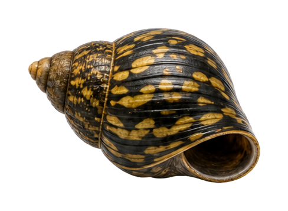
Vittina turrita
sp_0004边距 47px
48,47,393,263
主体完整度 1.0000
亮度/色差 73.8 / 44.8
/species-image-overrides/sp_0004.png?v=visibility_20260611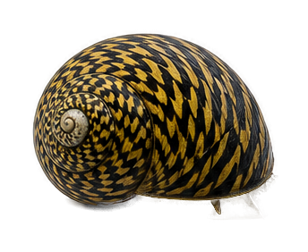
Clithon corona
sp_0005边距 33px
33,33,272,203
主体完整度 0.9994
亮度/色差 69.8 / 46.5
/species-image-overrides/sp_0005.png?v=visibility_20260611
Geosesarma dennerle
sp_0006边距 52px
52,52,436,180
主体完整度 0.9982
亮度/色差 62.0 / 58.4
/species-image-overrides/sp_0006.png?v=visibility_20260611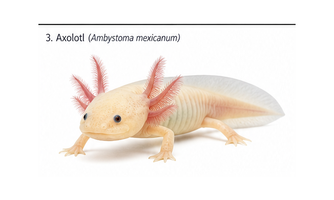
Ambystoma mexicanum
sp_0007边距 53px
53,53,443,213
主体完整度 0.9997
亮度/色差 198.6 / 58.5
/species-image-overrides/sp_0007.png?v=visibility_20260611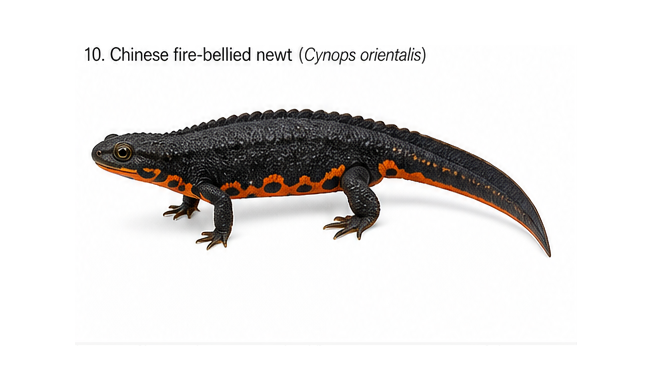
Cynops orientalis
sp_0008边距 55px
55,55,460,150
主体完整度 0.9989
亮度/色差 49.3 / 25.1
/species-image-overrides/sp_0008.png?v=visibility_20260611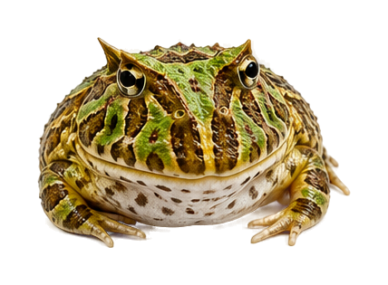
Ceratophrys ornata
sp_0009边距 41px
42,41,345,233
主体完整度 0.9993
亮度/色差 119.3 / 80.8
/species-image-overrides/sp_0009.png?v=visibility_20260611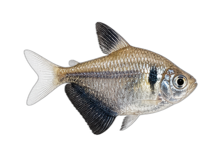
Gymnocorymbus ternetzi
sp_0010边距 42px
42,44,355,232
主体完整度 0.9994
亮度/色差 138.6 / 19.2
/species-image-overrides/sp_0010.png?v=visibility_20260611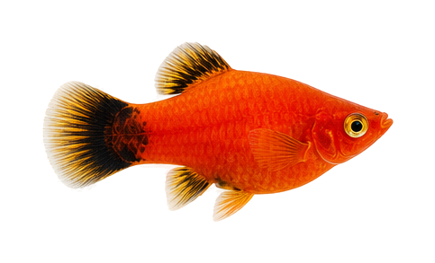
Xiphophorus maculatus
sp_0011边距 46px
47,47,390,200
主体完整度 1.0000
亮度/色差 89.6 / 171.7
/species-image-overrides/sp_0011.png?v=visibility_20260611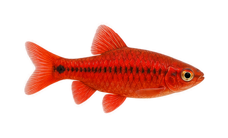
Puntius titteya
sp_0012边距 42px
42,44,357,175
主体完整度 1.0000
亮度/色差 78.6 / 175.1
/species-image-overrides/sp_0012.png?v=visibility_20260611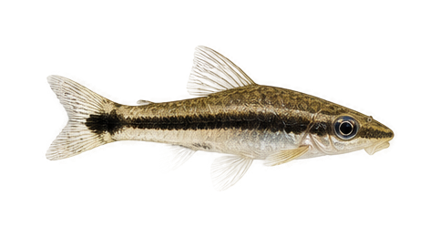
Otocinclus vittatus
sp_0013边距 46px
47,47,383,160
主体完整度 0.9958
亮度/色差 132.5 / 42.6
/species-image-overrides/sp_0013.png?v=visibility_20260611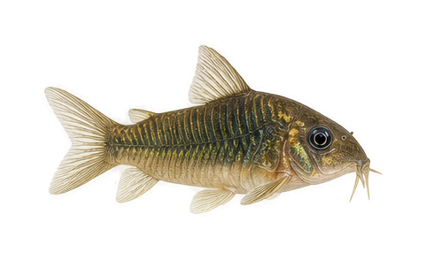
Corydoras aeneus
sp_0014边距 45px
45,48,383,192
主体完整度 0.9997
亮度/色差 134.0 / 47.2
/species-image-overrides/sp_0014.png?v=visibility_20260611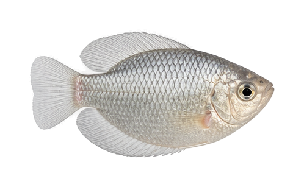
Helostoma temminkii
sp_0015边距 48px
49,48,401,211
主体完整度 0.9996
亮度/色差 180.3 / 11.2
/species-image-overrides/sp_0015.png?v=visibility_20260611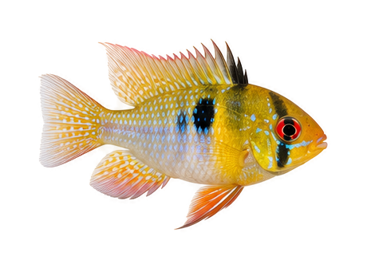
Mikrogeophagus ramirezi var. Gold
sp_0016边距 43px
43,43,363,240
主体完整度 1.0000
亮度/色差 147.4 / 110.3
/species-image-overrides/sp_0016.png?v=visibility_20260611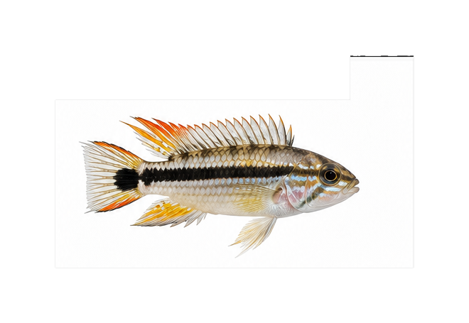
Apistogramma agassizii
sp_0017边距 47px
48,47,395,204
主体完整度 1.0000
亮度/色差 142.1 / 51.4
/species-image-overrides/sp_0017.png?v=visibility_20260611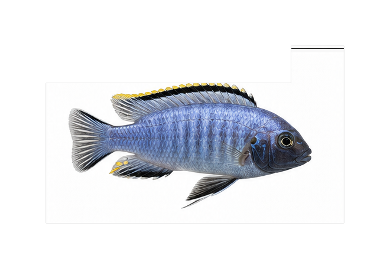
Chindongo socolofi
sp_0018边距 49px
52,49,412,216
主体完整度 1.0000
亮度/色差 115.9 / 41.3
/species-image-overrides/sp_0018.png?v=visibility_20260611
Pterophyllum altum
sp_0019边距 133px
134,133,414,213
主体完整度 0.9234
亮度/色差 146.4 / 16.7
/species-display/sp_0019_埃及神仙_display_white.png?v=displayfix_20260510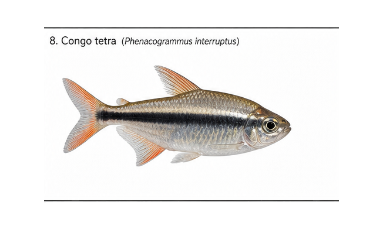
Phenacogrammus interruptus
sp_0020边距 46px
46,47,390,174
主体完整度 1.0000
亮度/色差 142.8 / 28.4
/species-image-overrides/sp_0020.png?v=visibility_20260611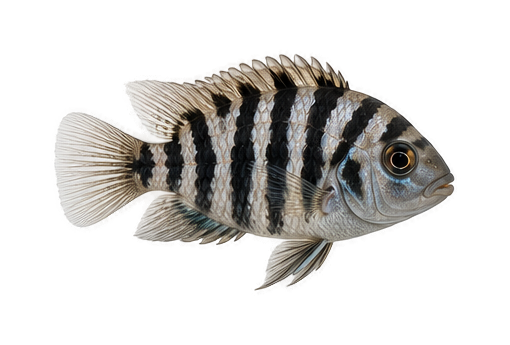
Amatitlania nigrofasciata var.
sp_0021边距 48px
48,48,401,237
主体完整度 1.0000
亮度/色差 116.7 / 16.2
/species-image-overrides/sp_0021.png?v=visibility_20260611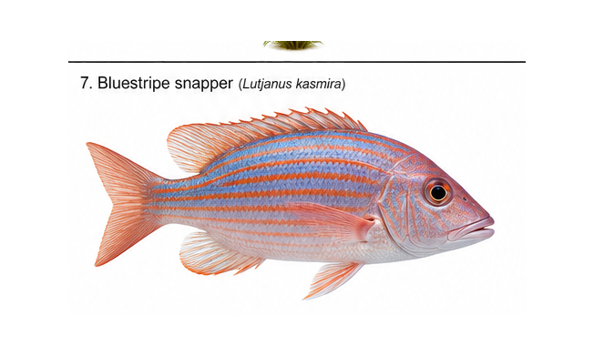
Lutjanus kasmira
sp_0022边距 54px
54,57,453,225
主体完整度 0.9998
亮度/色差 158.7 / 68.4
/species-image-overrides/sp_0022.png?v=visibility_20260611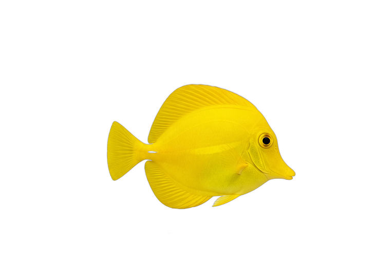
Zebrasoma flavescens
sp_0023边距 44px
44,44,367,244
主体完整度 1.0000
亮度/色差 188.9 / 224.9
/species-image-overrides/sp_0023.png?v=visibility_20260611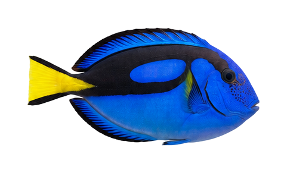
Paracanthurus hepatus
sp_0024边距 46px
46,46,389,199
主体完整度 1.0000
亮度/色差 71.4 / 134.9
/species-image-overrides/sp_0024.png?v=visibility_20260611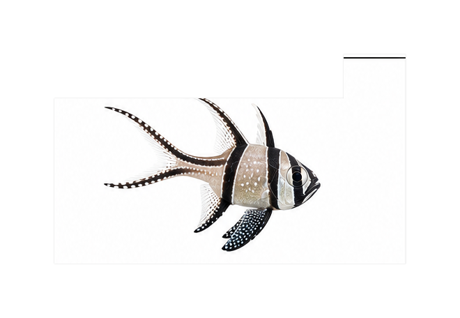
Pterapogon kauderni
sp_0025边距 37px
37,37,311,230
主体完整度 0.9890
亮度/色差 84.9 / 21.3
/species-image-overrides/sp_0025.png?v=visibility_20260611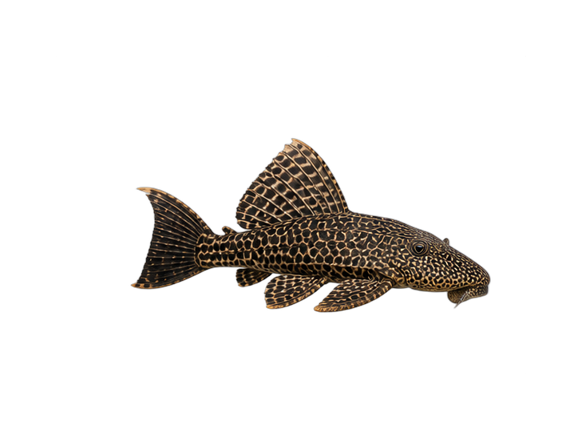
Hypostomus plecostomus
sp_0026边距 54px
55,55,450,219
主体完整度 1.0000
亮度/色差 67.4 / 33.4
/species-image-overrides/sp_0026.png?v=visibility_20260611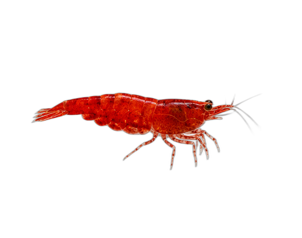
Neocaridina davidi var. Red
sp_0027边距 51px
51,63,426,193
主体完整度 0.9967
亮度/色差 62.7 / 165.2
/species-image-overrides/sp_0027.png?v=visibility_20260611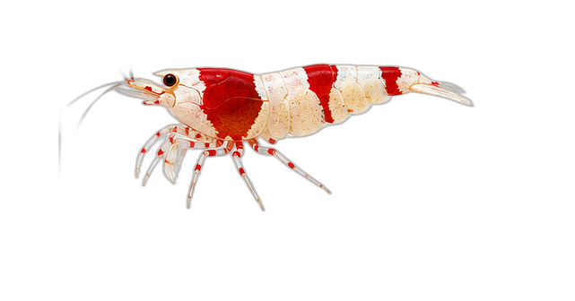
Caridina cantonensis var.
sp_0028边距 48px
52,55,403,155
主体完整度 0.9963
亮度/色差 157.1 / 89.9
/species-image-overrides/sp_0028.png?v=visibility_20260611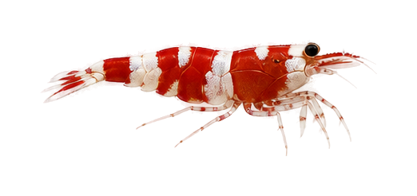
Caridina dennerli
sp_0029边距 50px
52,53,412,143
主体完整度 0.9964
亮度/色差 118.6 / 101.4
/species-image-overrides/sp_0029.png?v=visibility_20260611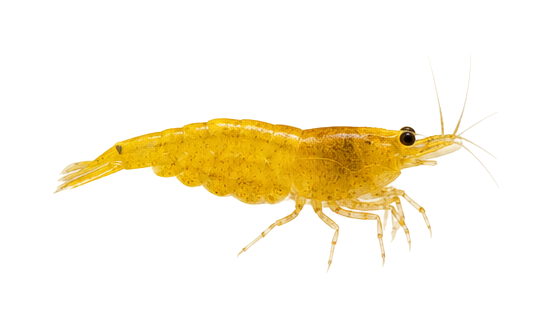
Neocaridina davidi var. Yellow
sp_0030边距 53px
53,72,442,200
主体完整度 0.9970
亮度/色差 164.0 / 197.3
/species-image-overrides/sp_0030.png?v=visibility_20260611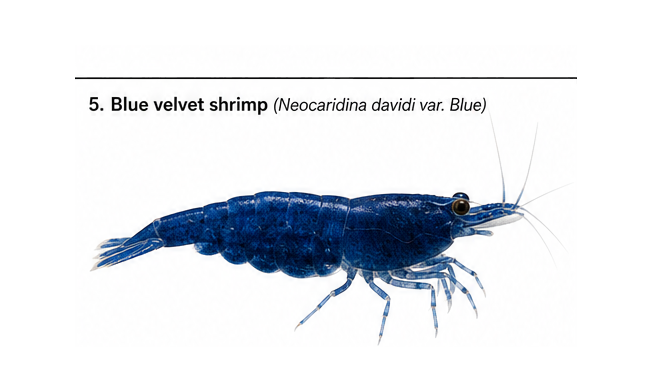
Neocaridina davidi var. Blue
sp_0031边距 52px
52,54,437,155
主体完整度 0.9992
亮度/色差 44.9 / 80.7
/species-image-overrides/sp_0031.png?v=visibility_20260611
Vittina turrita
sp_0032边距 47px
48,47,393,263
主体完整度 1.0000
亮度/色差 73.8 / 44.8
/species-image-overrides/sp_0032.png?v=visibility_20260611
Clithon corona
sp_0033边距 33px
33,33,272,203
主体完整度 0.9994
亮度/色差 69.8 / 46.5
/species-image-overrides/sp_0033.png?v=visibility_20260611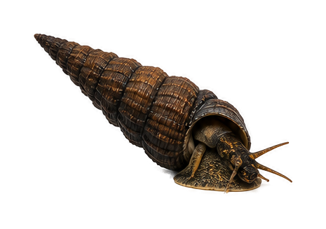
Tylomelania sp.
sp_0034边距 44px
44,44,369,229
主体完整度 1.0000
亮度/色差 53.0 / 33.6
/species-image-overrides/sp_0034.png?v=visibility_20260611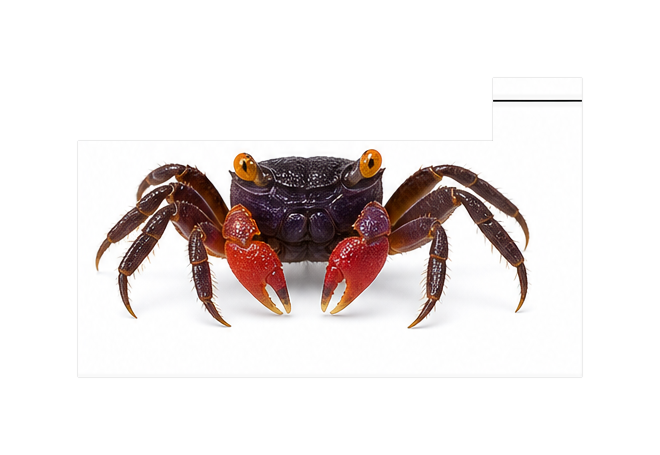
Geosesarma dennerle
sp_0035边距 52px
52,52,436,180
主体完整度 0.9982
亮度/色差 62.0 / 58.4
/species-image-overrides/sp_0035.png?v=visibility_20260611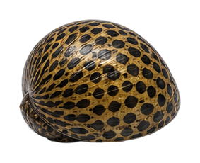
Neritina turrita var.
sp_0036边距 27px
27,28,228,178
主体完整度 1.0000
亮度/色差 72.8 / 43.8
主体透明安全边距偏小（27px），小缩略图或3D贴图可能视觉裁切
/species-image-overrides/sp_0036.png?v=visibility_20260611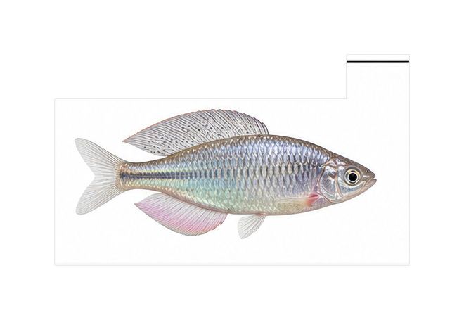
Acheilognathus macropterus
sp_0037边距 51px
51,52,431,188
主体完整度 0.9998
亮度/色差 169.0 / 17.5
/species-image-overrides/sp_0037.png?v=visibility_20260611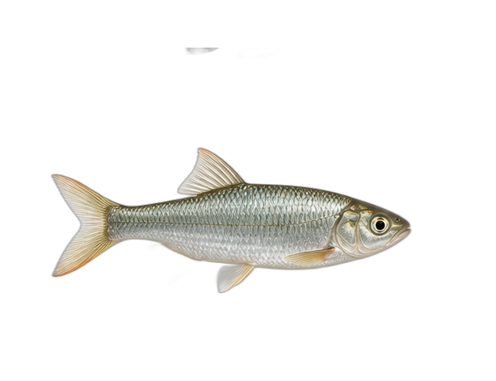
Opsariichthys bidens
sp_0038边距 53px
54,54,444,182
主体完整度 1.0000
亮度/色差 165.7 / 24.8
/species-image-overrides/sp_0038.png?v=visibility_20260611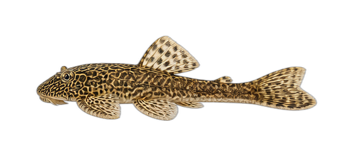
Pseudogastromyzon fangi
sp_0039边距 55px
55,55,464,141
主体完整度 1.0000
亮度/色差 118.1 / 63.6
/species-image-overrides/sp_0039.png?v=visibility_20260611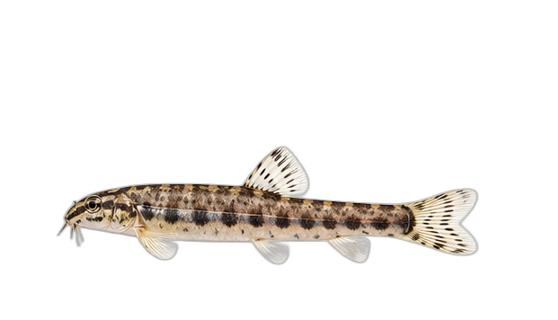
Cobitis sinensis
sp_0040边距 57px
57,60,467,132
主体完整度 0.9992
亮度/色差 150.3 / 40.5
/species-image-overrides/sp_0040.png?v=visibility_20260611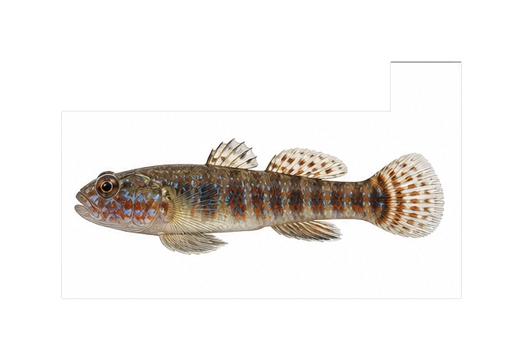
Abbottina rivularis
sp_0041边距 56px
56,58,470,149
主体完整度 0.9995
亮度/色差 126.6 / 43.2
/species-image-overrides/sp_0041.png?v=visibility_20260611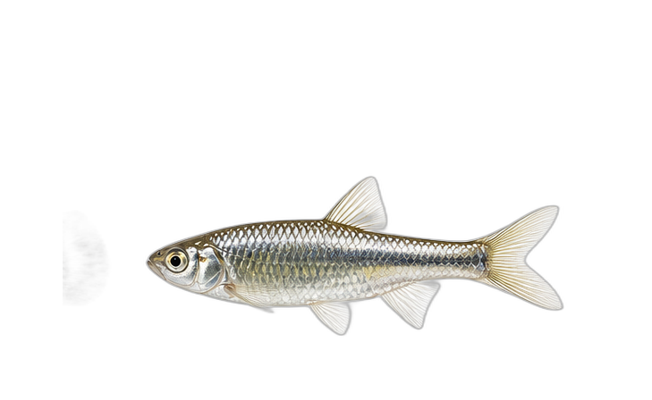
Pseudorasbora parva
sp_0042边距 57px
57,58,465,178
主体完整度 0.9977
亮度/色差 174.7 / 19.5
/species-image-overrides/sp_0042.png?v=visibility_20260611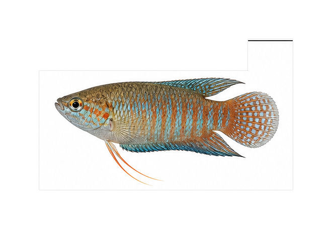
Macropodus ocellatus
sp_0043边距 53px
53,53,447,215
主体完整度 0.9997
亮度/色差 119.0 / 54.6
/species-image-overrides/sp_0043.png?v=visibility_20260611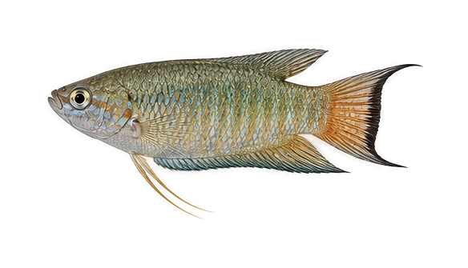
Macropodus spechti
sp_0044边距 56px
56,59,469,214
主体完整度 0.9999
亮度/色差 129.4 / 40.7
/species-image-overrides/sp_0044.png?v=visibility_20260611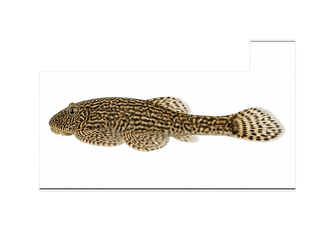
Sewellia lineolata
sp_0045边距 56px
56,57,467,109
主体完整度 0.9998
亮度/色差 113.5 / 52.7
/species-image-overrides/sp_0045.png?v=visibility_20260611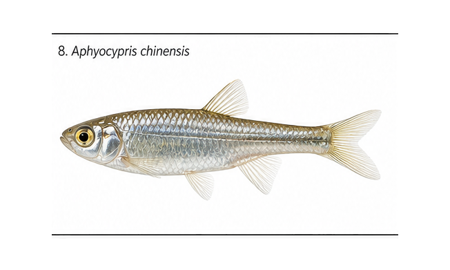
Aphyocypris chinensis
sp_0046边距 56px
56,56,468,182
主体完整度 0.9981
亮度/色差 179.2 / 23.3
/species-image-overrides/sp_0046.png?v=visibility_20260611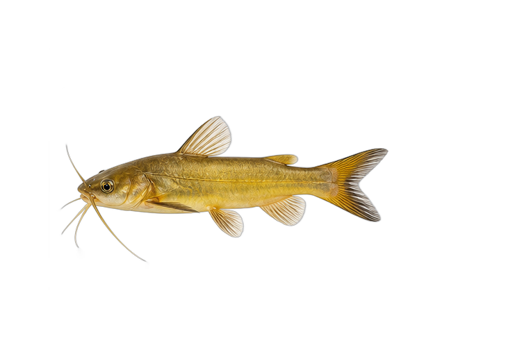
Pseudobagrus fulvidraco
sp_0047边距 56px
58,58,469,210
主体完整度 0.9990
亮度/色差 148.6 / 99.9
/species-image-overrides/sp_0047.png?v=visibility_20260611
Mastacembelus armatus
sp_0048边距 58px
58,58,484,117
主体完整度 0.9999
亮度/色差 120.8 / 71.0
/species-image-overrides/sp_0048.png?v=visibility_20260611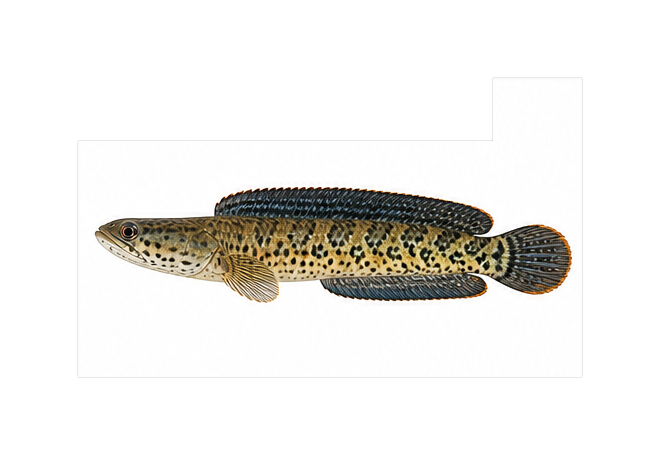
Channa asiatica
sp_0049边距 57px
59,57,478,117
主体完整度 1.0000
亮度/色差 96.4 / 39.8
/species-image-overrides/sp_0049.png?v=visibility_20260611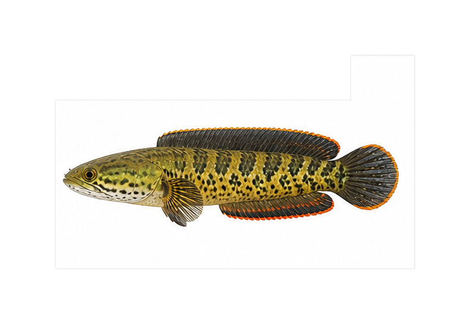
Channa barca
sp_0050边距 56px
56,56,472,141
主体完整度 1.0000
亮度/色差 97.1 / 62.7
/species-image-overrides/sp_0050.png?v=visibility_20260611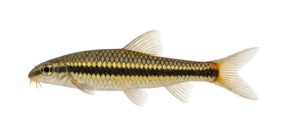
Acrossocheilus fasciatus
sp_0051边距 56px
56,59,467,157
主体完整度 0.9982
亮度/色差 141.6 / 51.4
/species-image-overrides/sp_0051.png?v=visibility_20260611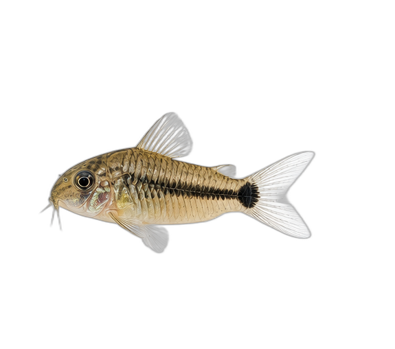
Corydoras hastatus
sp_0052边距 48px
51,49,399,210
主体完整度 0.9966
亮度/色差 165.1 / 39.0
/species-image-overrides/sp_0052.png?v=visibility_20260611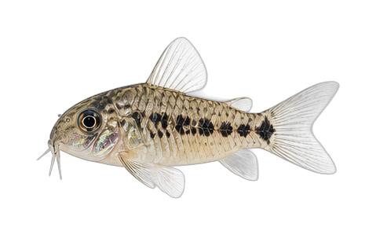
Corydoras pygmaeus
sp_0053边距 46px
46,48,384,206
主体完整度 0.9964
亮度/色差 170.5 / 26.2
/species-image-overrides/sp_0053.png?v=visibility_20260611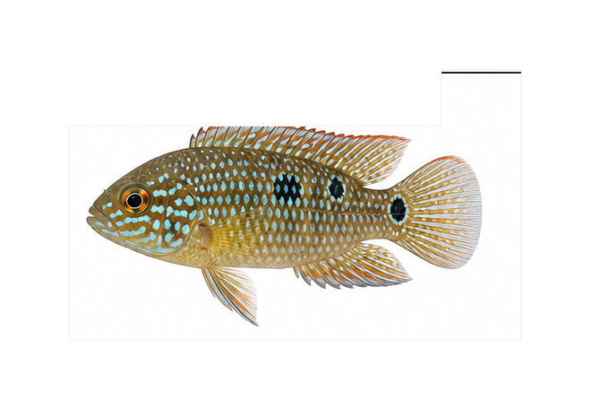
Hemichromis bimaculatus
sp_0054边距 53px
53,53,442,234
主体完整度 0.9999
亮度/色差 109.1 / 79.4
/species-image-overrides/sp_0054.png?v=visibility_20260611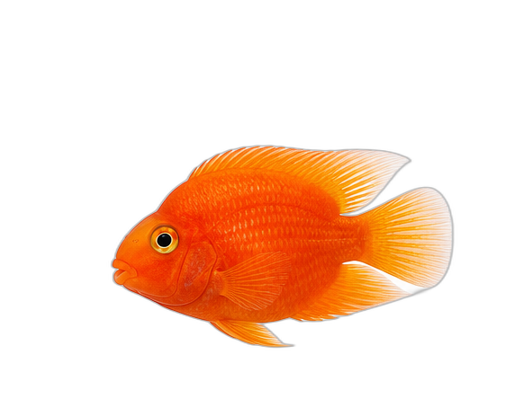
Cichlasoma var.
sp_0055边距 45px
45,49,378,225
主体完整度 0.9998
亮度/色差 132.6 / 204.1
/species-image-overrides/sp_0055.png?v=visibility_20260611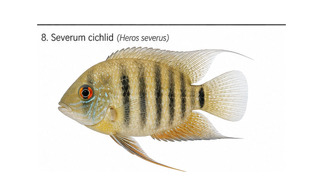
Heros severus
sp_0056边距 47px
49,51,396,256
主体完整度 0.9994
亮度/色差 159.3 / 54.9
/species-image-overrides/sp_0056.png?v=visibility_20260611
Altolamprologus calvus
sp_0057边距 51px
52,52,425,220
主体完整度 0.9996
亮度/色差 195.9 / 14.2
/species-image-overrides/sp_0057.png?v=visibility_20260611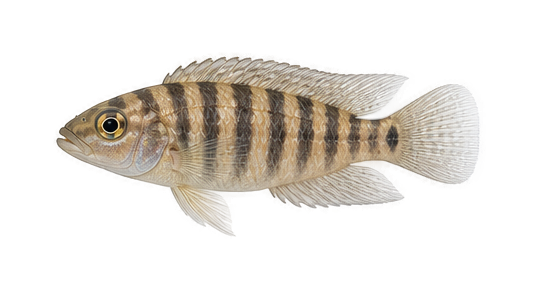
Neolamprologus multifasciatus
sp_0058边距 51px
51,54,427,181
主体完整度 0.9996
亮度/色差 157.7 / 34.5
/species-image-overrides/sp_0058.png?v=visibility_20260611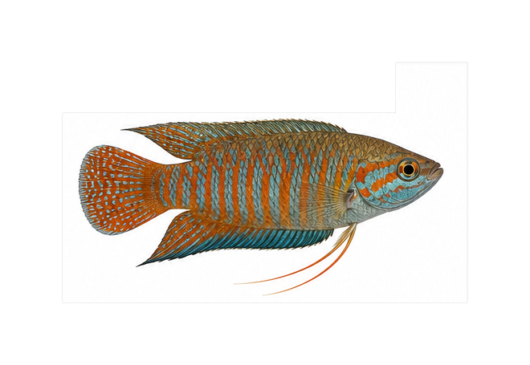
Macropodus opercularis
sp_0059边距 54px
55,54,456,222
主体完整度 1.0000
亮度/色差 101.7 / 75.7
/species-image-overrides/sp_0059.png?v=visibility_20260611
Sphaerichthys osphromenoides
sp_0060边距 48px
49,48,407,216
主体完整度 1.0000
亮度/色差 77.6 / 61.1
/species-image-overrides/sp_0060.png?v=visibility_20260611
Semaprochilodus insignis
sp_0061边距 53px
54,53,441,228
主体完整度 1.0000
亮度/色差 128.3 / 17.5
/species-image-overrides/sp_0061.png?v=visibility_20260611
Moenkhausia sanctaefilomenae
sp_0062边距 45px
45,45,370,210
主体完整度 0.9995
亮度/色差 171.0 / 29.6
/species-image-overrides/sp_0062.png?v=visibility_20260611Carassius auratus var. Ranchu
sp_0063边距 43px
43,44,362,221
主体完整度 1.0000
亮度/色差 154.6 / 123.9
/species-image-overrides/sp_0063.png?v=visibility_20260611Carassius auratus var. Oranda
sp_0064边距 45px
45,45,383,217
主体完整度 0.9998
亮度/色差 184.8 / 80.6
/species-image-overrides/sp_0064.png?v=visibility_20260611Carassius auratus var.
sp_0065边距 49px
49,52,408,237
主体完整度 0.9995
亮度/色差 189.5 / 69.4
/species-image-overrides/sp_0065.png?v=visibility_20260611Carassius auratus var.
sp_0066边距 51px
52,51,426,256
主体完整度 0.9995
亮度/色差 149.5 / 37.7
/species-image-overrides/sp_0066.png?v=visibility_20260611Carassius auratus var.
sp_0067边距 42px
42,43,358,232
主体完整度 0.9999
亮度/色差 163.0 / 139.5
/species-image-overrides/sp_0067.png?v=visibility_20260611Carassius auratus var.
sp_0068边距 46px
46,49,384,211
主体完整度 0.9995
亮度/色差 148.0 / 185.8
/species-image-overrides/sp_0068.png?v=visibility_20260611Cyprinus carpio var.
sp_0069边距 55px
55,56,465,202
主体完整度 0.9999
亮度/色差 169.6 / 55.9
/species-image-overrides/sp_0069.png?v=visibility_20260611Cyprinus carpio var. Longfin
sp_0070边距 57px
57,57,462,236
主体完整度 0.9985
亮度/色差 189.4 / 46.8
/species-image-overrides/sp_0070.png?v=visibility_20260611
Hemianthus callitrichoides
sp_0071边距 53px
53,53,449,191
主体完整度 0.9986
亮度/色差 103.2 / 107.1
/species-image-overrides/sp_0071.png?v=visibility_20260611Eleocharis acicularis
sp_0072边距 41px
43,42,339,276
主体完整度 0.9988
亮度/色差 109.9 / 106.0
/species-image-overrides/sp_0072.png?v=visibility_20260611
Utricularia graminifolia
sp_0073边距 51px
52,51,429,250
主体完整度 0.9959
亮度/色差 123.6 / 130.3
/species-image-overrides/sp_0073.png?v=visibility_20260611Bucephalandra sp.
sp_0074边距 46px
46,47,389,268
主体完整度 1.0000
亮度/色差 70.8 / 45.6
/species-image-overrides/sp_0074.png?v=visibility_20260611Anubias barteri var. nana
sp_0075边距 44px
44,44,371,254
主体完整度 1.0000
亮度/色差 92.8 / 85.4
/species-image-overrides/sp_0075.png?v=visibility_20260611Anubias barteri var. nana 'Petite'
sp_0076边距 38px
38,38,317,244
主体完整度 0.9998
亮度/色差 91.6 / 72.7
/species-image-overrides/sp_0076.png?v=visibility_20260611Cabomba caroliniana
sp_0077边距 37px
37,38,307,254
主体完整度 0.9898
亮度/色差 107.3 / 118.8
/species-image-overrides/sp_0077.png?v=visibility_20260611Rotala rotundifolia 'Green'
sp_0078边距 37px
37,37,312,231
主体完整度 0.9992
亮度/色差 129.3 / 140.6
/species-image-overrides/sp_0078.png?v=visibility_20260611
Rotala rotundifolia 'Red'
sp_0079边距 35px
35,36,297,255
主体完整度 0.9999
亮度/色差 62.9 / 127.8
/species-image-overrides/sp_0079.png?v=visibility_20260611Vesicularia dubyana
sp_0080边距 42px
42,47,345,194
主体完整度 0.9714
亮度/色差 17.6 / 17.5
/species-image-overrides/sp_0080.png?v=visibility_20260611
Microsorum pteropus
sp_0081边距 51px
51,52,431,267
主体完整度 1.0000
亮度/色差 102.5 / 99.3
/species-image-overrides/sp_0081.png?v=visibility_20260611
Bolbitis heudelotii
sp_0082边距 50px
50,50,418,259
主体完整度 0.9998
亮度/色差 76.4 / 88.9
/species-image-overrides/sp_0082.png?v=visibility_20260611
Cryptocoryne wendtii 'Green'
sp_0083边距 47px
48,47,397,269
主体完整度 0.9999
亮度/色差 91.7 / 76.9
/species-image-overrides/sp_0083.png?v=visibility_20260611Aponogeton crispus
sp_0084边距 54px
54,55,453,280
主体完整度 0.9991
亮度/色差 114.4 / 114.9
/species-image-overrides/sp_0084.png?v=visibility_20260611Lemna minor
sp_0085边距 48px
49,48,403,211
主体完整度 0.9994
亮度/色差 156.2 / 133.8
/species-image-overrides/sp_0085.png?v=visibility_20260611Limnobium laevigatum
sp_0086边距 40px
40,40,339,245
主体完整度 0.9996
亮度/色差 134.4 / 114.4
/species-image-overrides/sp_0086.png?v=visibility_20260611Egeria densa
sp_0087边距 50px
50,50,418,273
主体完整度 1.0000
亮度/色差 119.5 / 133.1
/species-image-overrides/sp_0087.png?v=visibility_20260611Nymphaea lotus
sp_0088边距 41px
41,41,348,263
主体完整度 1.0000
亮度/色差 49.4 / 115.7
/species-image-overrides/sp_0088.png?v=visibility_20260611Limnophila aquatica
sp_0089边距 38px
38,38,303,310
主体完整度 0.9997
亮度/色差 121.5 / 132.3
/species-image-overrides/sp_0089.png?v=visibility_20260611Microsorum pteropus 'Narrow'
sp_0090边距 48px
49,49,402,256
主体完整度 0.9998
亮度/色差 110.9 / 122.0
/species-image-overrides/sp_0090.png?v=visibility_20260611Staurogyne repens
sp_0091边距 52px
53,52,436,241
主体完整度 0.9996
亮度/色差 124.1 / 121.1
/species-image-overrides/sp_0091.png?v=visibility_20260611Ludwigia glandulosa
sp_0092边距 33px
34,33,279,276
主体完整度 0.9998
亮度/色差 81.8 / 113.8
/species-image-overrides/sp_0092.png?v=visibility_20260611Micranthemum umbrosum
sp_0093边距 46px
46,46,387,264
主体完整度 1.0000
亮度/色差 124.6 / 130.8
/species-image-overrides/sp_0093.png?v=visibility_20260611
Echinodorus amazonicus
sp_0094边距 49px
50,49,409,265
主体完整度 0.9994
亮度/色差 122.5 / 121.8
/species-image-overrides/sp_0094.png?v=visibility_20260611Ludwigia inclinata var. verticillata
sp_0095边距 31px
32,31,262,261
主体完整度 0.9887
亮度/色差 97.0 / 126.2
主体透明安全边距偏小（31px），小缩略图或3D贴图可能视觉裁切
/species-image-overrides/sp_0095.png?v=visibility_20260611Bacopa caroliniana
sp_0096边距 34px
34,34,255,286
主体完整度 0.9998
亮度/色差 123.3 / 129.3
/species-image-overrides/sp_0096.png?v=visibility_20260611Myriophyllum aquaticum
sp_0097边距 40px
41,41,338,262
主体完整度 0.9999
亮度/色差 96.7 / 63.8
/species-image-overrides/sp_0097.png?v=visibility_20260611Blyxa japonica
sp_0098边距 45px
45,45,377,277
主体完整度 0.9999
亮度/色差 123.4 / 134.1
/species-image-overrides/sp_0098.png?v=visibility_20260611Riccia fluitans
sp_0099边距 49px
49,50,415,258
主体完整度 1.0000
亮度/色差 122.4 / 118.7
/species-image-overrides/sp_0099.png?v=visibility_20260611Vesicularia sp.
sp_0100边距 51px
51,52,426,235
主体完整度 0.9999
亮度/色差 70.0 / 77.9
/species-image-overrides/sp_0100.png?v=visibility_20260611Fissidens fontanus
sp_0101边距 49px
50,49,414,212
主体完整度 1.0000
亮度/色差 83.5 / 93.4
/species-image-overrides/sp_0101.png?v=visibility_20260611
Cryptocoryne aponogetifolia
sp_0102边距 48px
48,48,405,262
主体完整度 0.9992
亮度/色差 100.6 / 87.7
/species-image-overrides/sp_0102.png?v=visibility_20260611Scleropages formosus
sp_0103边距 58px
58,58,490,148
主体完整度 1.0000
亮度/色差 140.6 / 92.3
/species-image-overrides/sp_0103.png?v=visibility_20260611Scleropages formosus var. Red
sp_0104边距 58px
59,58,487,155
主体完整度 0.9999
亮度/色差 110.4 / 107.5
/species-image-overrides/sp_0104.png?v=visibility_20260611Polypterus ornatipinnis
sp_0105边距 57px
57,57,479,124
主体完整度 1.0000
亮度/色差 121.1 / 69.4
/species-image-overrides/sp_0105.png?v=visibility_20260611Erpetoichthys calabaricus
sp_0106边距 55px
55,55,458,170
主体完整度 1.0000
亮度/色差 83.6 / 36.4
/species-image-overrides/sp_0106.png?v=visibility_20260611Semaprochilodus taeniurus
sp_0107边距 56px
58,57,467,196
主体完整度 0.9999
亮度/色差 144.4 / 16.4
/species-image-overrides/sp_0107.png?v=visibility_20260611Channa bleheri
sp_0108边距 59px
59,59,485,136
主体完整度 0.9996
亮度/色差 88.2 / 30.2
/species-image-overrides/sp_0108.png?v=visibility_20260611Channa aurantimaculata
sp_0109边距 56px
56,57,471,130
主体完整度 1.0000
亮度/色差 61.7 / 28.2
/species-image-overrides/sp_0109.png?v=visibility_20260611Channa lorti
sp_0110边距 58px
58,58,488,145
主体完整度 0.9999
亮度/色差 87.5 / 29.5
/species-image-overrides/sp_0110.png?v=visibility_20260611Sawbwa resplendens
sp_0111边距 53px
53,53,438,149
主体完整度 0.9993
亮度/色差 141.5 / 36.8
/species-image-overrides/sp_0111.png?v=visibility_20260611Poropanchax normani
sp_0112边距 52px
52,54,435,203
主体完整度 0.9989
亮度/色差 145.3 / 45.1
/species-image-overrides/sp_0112.png?v=visibility_20260611Epiplatys annulatus
sp_0113边距 52px
52,52,437,154
主体完整度 0.9999
亮度/色差 83.2 / 99.9
/species-image-overrides/sp_0113.png?v=visibility_20260611Hyphessobrycon amandae
sp_0114边距 40px
41,40,338,197
主体完整度 0.9946
亮度/色差 130.8 / 113.0
/species-image-overrides/sp_0114.png?v=visibility_20260611Hyphessobrycon amapaensis
sp_0115边距 48px
48,48,406,190
主体完整度 0.9995
亮度/色差 153.6 / 26.2
/species-image-overrides/sp_0115.png?v=visibility_20260611
Scleropages formosus
sp_0116边距 78px
79,78,488,185
主体完整度 0.9610
亮度/色差 142.5 / 86.2
/species-transparent/batch_008_species_sheet_06_金龙鱼_Scleropages_formosus.png?v=cutfix5_20260601
Osteoglossum bicirrhosum
sp_0117边距 57px
57,58,479,156
主体完整度 0.9999
亮度/色差 161.9 / 28.0
/species-image-overrides/sp_0117.png?v=visibility_20260611Osteoglossum ferreirai
sp_0118边距 57px
57,57,475,149
主体完整度 1.0000
亮度/色差 48.3 / 21.7
/species-image-overrides/sp_0118.png?v=visibility_20260611Pantodon buchholzi
sp_0119边距 50px
50,53,424,211
主体完整度 0.9996
亮度/色差 136.4 / 39.1
/species-image-overrides/sp_0119.png?v=visibility_20260611Gymnotus carapo
sp_0120边距 55px
56,55,462,118
主体完整度 0.9998
亮度/色差 77.1 / 11.1
/species-image-overrides/sp_0120.png?v=visibility_20260611Peckoltia compta
sp_0121边距 54px
54,57,450,227
主体完整度 0.9999
亮度/色差 85.2 / 20.6
/species-image-overrides/sp_0121.png?v=visibility_20260611Panaque nigrolineatus
sp_0122边距 54px
54,54,456,231
主体完整度 1.0000
亮度/色差 69.9 / 47.3
/species-image-overrides/sp_0122.png?v=visibility_20260611Pterygoplichthys gibbiceps
sp_0123边距 56px
57,57,467,232
主体完整度 1.0000
亮度/色差 51.1 / 18.9
/species-image-overrides/sp_0123.png?v=visibility_20260611Ancistrus sp.
sp_0124边距 56px
56,58,467,205
主体完整度 1.0000
亮度/色差 71.2 / 47.4
/species-image-overrides/sp_0124.png?v=visibility_20260611Hypancistrus inspector
sp_0125边距 49px
50,49,405,236
主体完整度 0.9998
亮度/色差 133.7 / 17.6
/species-image-overrides/sp_0125.png?v=visibility_20260611Chromobotia macracanthus
sp_0126边距 52px
52,52,436,176
主体完整度 1.0000
亮度/色差 103.1 / 106.4
/species-image-overrides/sp_0126.png?v=visibility_20260611Botia almorhae
sp_0127边距 54px
55,54,450,148
主体完整度 0.9998
亮度/色差 105.5 / 77.8
/species-image-overrides/sp_0127.png?v=visibility_20260611Beaufortia kweichowensis
sp_0128边距 54px
54,54,453,114
主体完整度 1.0000
亮度/色差 104.2 / 54.6
/species-image-overrides/sp_0128.png?v=visibility_20260611Zacco platypus
sp_0129边距 52px
52,52,438,173
主体完整度 0.9994
亮度/色差 153.7 / 28.2
/species-image-overrides/sp_0129.png?v=visibility_20260611
Opsariichthys bidens
sp_0130边距 53px
54,54,444,182
主体完整度 1.0000
亮度/色差 165.7 / 24.8
/species-image-overrides/sp_0130.png?v=visibility_20260611Mastacembelus armatus
sp_0131边距 58px
58,58,484,117
主体完整度 0.9999
亮度/色差 120.8 / 71.0
/species-image-overrides/sp_0131.png?v=visibility_20260611
Parambassis ranga
sp_0132边距 49px
49,50,415,207
主体完整度 0.9970
亮度/色差 175.4 / 13.8
/species-image-overrides/sp_0132.png?v=visibility_20260611Glossolepis incisus
sp_0133边距 51px
52,52,430,157
主体完整度 0.9998
亮度/色差 125.2 / 97.6
/species-image-overrides/sp_0133.png?v=visibility_20260611Iriatherina werneri
sp_0134边距 53px
53,53,446,158
主体完整度 0.9989
亮度/色差 168.7 / 39.7
/species-image-overrides/sp_0134.png?v=visibility_20260611Pseudomugil furcatus
sp_0135边距 51px
51,55,426,152
主体完整度 0.9998
亮度/色差 160.6 / 27.0
/species-image-overrides/sp_0135.png?v=visibility_20260611Sphaerichthys osphromenoides
sp_0136边距 48px
49,48,407,216
主体完整度 1.0000
亮度/色差 77.6 / 61.1
/species-image-overrides/sp_0136.png?v=visibility_20260611Semaprochilodus insignis
sp_0137边距 53px
54,53,441,228
主体完整度 1.0000
亮度/色差 128.3 / 17.5
/species-image-overrides/sp_0137.png?v=visibility_20260611Leporinus fasciatus
sp_0138边距 55px
55,56,457,209
主体完整度 0.9993
亮度/色差 141.3 / 67.2
/species-image-overrides/sp_0138.png?v=visibility_20260611Piaractus brachypomus
sp_0139边距 50px
50,50,419,230
主体完整度 1.0000
亮度/色差 76.0 / 38.5
/species-image-overrides/sp_0139.png?v=visibility_20260611Serrasalmus rhombeus
sp_0140边距 47px
47,49,392,232
主体完整度 1.0000
亮度/色差 103.9 / 47.3
/species-image-overrides/sp_0140.png?v=visibility_20260611Hyphessobrycon pulchripinnis var.
sp_0141边距 48px
48,48,390,204
主体完整度 0.9990
亮度/色差 188.4 / 136.3
/species-image-overrides/sp_0141.png?v=visibility_20260611Poecilia sphenops var.
sp_0142边距 49px
50,52,401,220
主体完整度 0.9988
亮度/色差 159.4 / 11.9
/species-image-overrides/sp_0142.png?v=visibility_20260611Poecilia reticulata var.
sp_0143边距 49px
49,50,409,224
主体完整度 0.9998
亮度/色差 99.0 / 93.7
/species-image-overrides/sp_0143.png?v=visibility_20260611Poecilia reticulata var.
sp_0144边距 50px
50,51,409,220
主体完整度 0.9993
亮度/色差 113.9 / 39.0
/species-image-overrides/sp_0144.png?v=visibility_20260611Poecilia reticulata var. Dumbo
sp_0145边距 50px
51,50,418,203
主体完整度 0.9996
亮度/色差 135.2 / 31.4
/species-image-overrides/sp_0145.png?v=visibility_20260611
Mikrogeophagus ramirezi var. Platinum
sp_0146边距 43px
45,46,361,246
主体完整度 1.0000
亮度/色差 199.8 / 25.1
/species-image-overrides/sp_0146.png?v=visibility_20260611Amatitlania nigrofasciata var. Blue
sp_0147边距 50px
51,52,415,250
主体完整度 0.9999
亮度/色差 114.3 / 95.1
/species-image-overrides/sp_0147.png?v=visibility_20260611
Amatitlania nigrofasciata var. White
sp_0148边距 50px
51,52,422,248
主体完整度 0.9998
亮度/色差 193.3 / 9.5
/species-image-overrides/sp_0148.png?v=visibility_20260611Carassius auratus var. Panda
sp_0149边距 43px
43,45,347,270
主体完整度 0.9999
亮度/色差 106.7 / 17.5
/species-image-overrides/sp_0149.png?v=visibility_20260611Carassius auratus var. Oranda
sp_0150边距 42px
42,42,349,221
主体完整度 0.9998
亮度/色差 147.0 / 136.8
/species-image-overrides/sp_0150.png?v=visibility_20260611
Gymnocorymbus ternetzi var. Color morph
sp_0151边距 48px
80,92,632,368
主体完整度 0.9942
亮度/色差 103.4 / 140.7
/species-generated/fish/sp_0450_colored_skirt_tetra.png
Danio rerio var. GloFish
sp_0152边距 54px
54,55,449,158
主体完整度 0.9999
亮度/色差 185.8 / 117.3
/species-image-overrides/sp_0152.png?v=visibility_20260611Trichopodus leerii var. Balloon
sp_0153边距 51px
52,51,427,225
主体完整度 0.9988
亮度/色差 183.6 / 26.6
/species-image-overrides/sp_0153.png?v=visibility_20260611Hemigrammus bleheri var.
sp_0154边距 52px
52,52,436,202
主体完整度 0.9992
亮度/色差 171.6 / 26.1
/species-image-overrides/sp_0154.png?v=visibility_20260611Paracheirodon innesi var.
sp_0155边距 53px
53,53,444,208
主体完整度 0.9887
亮度/色差 122.2 / 62.4
/species-image-overrides/sp_0155.png?v=visibility_20260611
Trichopodus trichopterus var. Platinum
sp_0156边距 51px
54,52,425,202
主体完整度 0.9988
亮度/色差 204.9 / 14.3
/species-image-overrides/sp_0156.png?v=visibility_20260611Mikrogeophagus ramirezi var. Blue
sp_0157边距 45px
46,45,374,252
主体完整度 0.9996
亮度/色差 142.2 / 54.4
/species-image-overrides/sp_0157.png?v=visibility_20260611Xiphophorus hellerii var.
sp_0158边距 53px
54,54,445,175
主体完整度 0.9999
亮度/色差 78.3 / 181.1
/species-image-overrides/sp_0158.png?v=visibility_20260611Ancistrus sp. Gold
sp_0159边距 57px
58,57,474,213
主体完整度 0.9998
亮度/色差 181.7 / 163.9
/species-image-overrides/sp_0159.png?v=visibility_20260611
Ancistrus sp. Longfin Platinum
sp_0160边距 55px
55,57,463,214
主体完整度 0.9997
亮度/色差 203.6 / 49.1
/species-image-overrides/sp_0160.png?v=visibility_20260611Poecilia sphenops var. Chocolate
sp_0161边距 49px
51,51,414,239
主体完整度 0.9991
亮度/色差 84.4 / 39.3
/species-image-overrides/sp_0161.png?v=visibility_20260611Carassius auratus var.
sp_0162边距 48px
48,48,406,221
主体完整度 0.9998
亮度/色差 125.7 / 211.7
/species-image-overrides/sp_0162.png?v=visibility_20260611Cyprinus carpio var. Kohaku
sp_0163边距 56px
58,57,465,210
主体完整度 0.9998
亮度/色差 174.4 / 67.1
/species-image-overrides/sp_0163.png?v=visibility_20260611
Neocaridina davidi var. Black
sp_0164边距 54px
55,66,457,199
主体完整度 0.9961
亮度/色差 27.7 / 8.0
/species-image-overrides/sp_0164.png?v=visibility_20260611Neocaridina davidi var. Yellow Line
sp_0165边距 52px
53,58,436,156
主体完整度 0.9995
亮度/色差 163.2 / 102.3
/species-image-overrides/sp_0165.png?v=visibility_20260611Neocaridina davidi var. Fire Red
sp_0166边距 53px
54,65,439,165
主体完整度 0.9989
亮度/色差 63.0 / 165.2
/species-image-overrides/sp_0166.png?v=visibility_20260611Hemigrammus bleheri var. Balloon
sp_0167边距 47px
47,47,398,239
主体完整度 0.9994
亮度/色差 189.2 / 22.7
/species-image-overrides/sp_0167.png?v=visibility_20260611Poecilia latipinna var. Gold
sp_0168边距 49px
50,52,414,198
主体完整度 0.9998
亮度/色差 164.4 / 176.3
/species-image-overrides/sp_0168.png?v=visibility_20260611
Poecilia latipinna var. Silver
sp_0169边距 52px
54,52,437,197
主体完整度 0.9996
亮度/色差 208.9 / 6.5
浅色主体在白底上对比不足，App 中可能看起来像身体被抠掉
/species-image-overrides/sp_0169.png?v=visibility_20260611Poecilia reticulata var. Full Black
sp_0170边距 53px
54,55,411,175
主体完整度 1.0000
亮度/色差 26.8 / 4.9
/species-image-overrides/sp_0170.png?v=visibility_20260611
Tanichthys albonubes var. Albino
sp_0171边距 53px
53,54,447,174
主体完整度 0.9997
亮度/色差 190.6 / 52.9
/species-image-overrides/sp_0171.png?v=visibility_20260611Tanichthys albonubes var. Longfin
sp_0172边距 55px
55,55,462,193
主体完整度 0.9995
亮度/色差 157.6 / 44.3
/species-image-overrides/sp_0172.png?v=visibility_20260611Salminus brasiliensis var.
sp_0173边距 55px
55,55,465,186
主体完整度 0.9999
亮度/色差 153.9 / 108.2
/species-image-overrides/sp_0173.png?v=visibility_20260611
Gymnocorymbus ternetzi var. Albino
sp_0174边距 49px
49,51,399,225
主体完整度 0.9980
亮度/色差 193.5 / 18.2
/species-image-overrides/sp_0174.png?v=visibility_20260611
Pterophyllum scalare var. Red
sp_0175边距 90px
90,90,502,301
主体完整度 0.8773
亮度/色差 109.0 / 133.9
/species-display/sp_0175_血钻神仙_display_white.png?v=displayfix_20260510
Pterophyllum scalare var. Marble
sp_0176边距 90px
90,94,502,295
主体完整度 0.8836
亮度/色差 111.4 / 13.5
/species-display/sp_0176_黑白大理石神仙_display_white.png?v=displayfix_20260510
Pterophyllum scalare var. Blue
sp_0177边距 90px
90,91,502,295
主体完整度 0.8542
亮度/色差 144.4 / 32.9
/species-display/sp_0177_红眼蓝钻神仙_display_white.png?v=displayfix_20260510
Pterophyllum scalare var. Panda
sp_0178边距 90px
90,102,502,289
主体完整度 0.8610
亮度/色差 106.8 / 12.8
/species-display/sp_0178_熊猫神仙_display_white.png?v=displayfix_20260510Trichopodus trichopterus var. Balloon
sp_0179边距 48px
48,49,399,195
主体完整度 0.9996
亮度/色差 156.3 / 40.7
/species-image-overrides/sp_0179.png?v=visibility_20260611Carassius auratus var. Telescopes
sp_0180边距 44px
44,46,368,237
主体完整度 0.9997
亮度/色差 166.6 / 118.4
/species-image-overrides/sp_0180.png?v=visibility_20260611Gnathonemus petersii
sp_0181边距 52px
52,54,441,218
主体完整度 0.9994
亮度/色差 160.4 / 9.4
/species-image-overrides/sp_0181.png?v=visibility_20260611Panaque sp. L191
sp_0182边距 54px
54,56,456,220
主体完整度 1.0000
亮度/色差 59.3 / 36.0
/species-image-overrides/sp_0182.png?v=visibility_20260611Xanthichthys mento
sp_0183边距 48px
48,49,396,209
主体完整度 0.9994
亮度/色差 135.5 / 38.5
/species-image-overrides/sp_0183.png?v=visibility_20260611Centropyge heraldi
sp_0184边距 40px
40,40,339,235
主体完整度 0.9999
亮度/色差 155.5 / 204.3
/species-image-overrides/sp_0184.png?v=visibility_20260611Pomacanthus annularis
sp_0185边距 39px
39,39,326,230
主体完整度 1.0000
亮度/色差 42.9 / 69.6
/species-image-overrides/sp_0185.png?v=visibility_20260611Chaetodon auriga
sp_0186边距 41px
51,41,329,206
主体完整度 0.9984
亮度/色差 167.5 / 74.3
/species-image-overrides/sp_0186.png?v=visibility_20260611Chrysiptera cyanea
sp_0187边距 39px
40,40,332,215
主体完整度 0.9998
亮度/色差 89.6 / 154.4
/species-image-overrides/sp_0187.png?v=visibility_20260611Lysmata amboinensis
sp_0188边距 42px
42,80,284,192
主体完整度 0.9856
亮度/色差 154.0 / 129.0
/species-image-overrides/sp_0188.png?v=visibility_20260611Thor amboinensis
sp_0189边距 46px
59,47,374,242
主体完整度 0.9932
亮度/色差 143.5 / 110.6
/species-image-overrides/sp_0189.png?v=visibility_20260611Lysmata boggesi
sp_0190边距 48px
48,53,385,194
主体完整度 0.9883
亮度/色差 168.7 / 66.9
/species-image-overrides/sp_0190.png?v=visibility_20260611Paguristes cadenati
sp_0191边距 47px
50,50,394,221
主体完整度 0.9995
亮度/色差 104.7 / 102.3
/species-image-overrides/sp_0191.png?v=visibility_20260611Entacmaea quadricolor
sp_0192边距 41px
42,41,346,236
主体完整度 1.0000
亮度/色差 115.6 / 83.3
/species-image-overrides/sp_0192.png?v=visibility_20260611Stichodactyla haddoni
sp_0193边距 50px
50,51,419,248
主体完整度 0.9998
亮度/色差 125.1 / 86.5
/species-image-overrides/sp_0193.png?v=visibility_20260611Protula bispiralis
sp_0194边距 40px
42,43,335,238
主体完整度 0.9968
亮度/色差 136.1 / 60.1
/species-image-overrides/sp_0194.png?v=visibility_20260611Astropecten polyacanthus
sp_0195边距 43px
43,44,361,241
主体完整度 1.0000
亮度/色差 134.6 / 46.3
/species-image-overrides/sp_0195.png?v=visibility_20260611Sahyadria denisonii var. Gold
sp_0196边距 49px
50,49,414,206
主体完整度 0.9997
亮度/色差 150.9 / 135.4
/species-image-overrides/sp_0196.png?v=visibility_20260611
Channa stewartii
sp_0197边距 56px
58,57,471,156
主体完整度 1.0000
亮度/色差 72.8 / 33.2
/species-image-overrides/sp_0197.png?v=visibility_20260611Channa diplogramma
sp_0198边距 56px
56,57,472,135
主体完整度 0.9997
亮度/色差 101.2 / 38.7
/species-image-overrides/sp_0198.png?v=visibility_20260611Badis badis
sp_0199边距 49px
49,50,411,226
主体完整度 1.0000
亮度/色差 109.8 / 63.3
/species-image-overrides/sp_0199.png?v=visibility_20260611Dario dario
sp_0200边距 53px
53,54,444,217
主体完整度 0.9999
亮度/色差 58.9 / 133.9
/species-image-overrides/sp_0200.png?v=visibility_20260611Leporacanthicus cf. galaxias
sp_0201边距 55px
56,56,461,221
主体完整度 1.0000
亮度/色差 56.5 / 24.9
/species-image-overrides/sp_0201.png?v=visibility_20260611Scobinancistrus aureatus
sp_0202边距 52px
53,55,438,220
主体完整度 0.9999
亮度/色差 158.7 / 167.0
/species-image-overrides/sp_0202.png?v=visibility_20260611Poecilia sphenops var. Green
sp_0203边距 49px
50,52,411,238
主体完整度 0.9994
亮度/色差 132.0 / 63.7
/species-image-overrides/sp_0203.png?v=visibility_20260611Hemigrammus bleheri var.
sp_0204边距 50px
50,53,418,225
主体完整度 0.9992
亮度/色差 91.6 / 12.5
/species-image-overrides/sp_0204.png?v=visibility_20260611Hyphessobrycon herbertaxelrodi var.
sp_0205边距 54px
56,58,440,200
主体完整度 0.9956
亮度/色差 147.6 / 18.7
/species-image-overrides/sp_0205.png?v=visibility_20260611Paracheirodon innesi var. Diamond
sp_0206边距 51px
51,52,430,219
主体完整度 0.9938
亮度/色差 134.5 / 59.0
/species-image-overrides/sp_0206.png?v=visibility_20260611
Gymnocorymbus ternetzi var. White
sp_0207边距 48px
48,48,400,221
主体完整度 0.9983
亮度/色差 220.0 / 7.2
浅色主体在白底上对比不足，App 中可能看起来像身体被抠掉
/species-image-overrides/sp_0207.png?v=visibility_20260611Aphyocharax anisitsi var. Balloon
sp_0208边距 51px
54,51,421,220
主体完整度 0.9989
亮度/色差 151.9 / 64.6
/species-image-overrides/sp_0208.png?v=visibility_20260611Poecilia latipinna var. Blood
sp_0209边距 48px
50,50,385,213
主体完整度 1.0000
亮度/色差 63.3 / 209.4
/species-image-overrides/sp_0209.png?v=visibility_20260611Pangio kuhlii var.
sp_0210边距 55px
55,55,463,82
主体完整度 0.9999
亮度/色差 84.9 / 66.6
/species-image-overrides/sp_0210.png?v=visibility_20260611Thorichthys meeki var.
sp_0211边距 51px
51,55,430,233
主体完整度 0.9993
亮度/色差 145.4 / 50.2
/species-image-overrides/sp_0211.png?v=visibility_20260611Hemigrammus rodwayi var.
sp_0212边距 52px
52,52,435,200
主体完整度 0.9988
亮度/色差 151.9 / 39.9
/species-image-overrides/sp_0212.png?v=visibility_20260611Crossocheilus langei var. Gold
sp_0213边距 56px
56,58,472,161
主体完整度 0.9996
亮度/色差 162.5 / 119.4
/species-image-overrides/sp_0213.png?v=visibility_20260611
Pelvicachromis pulcher var. Albino
sp_0214边距 52px
53,54,425,202
主体完整度 0.9991
亮度/色差 179.4 / 33.2
/species-image-overrides/sp_0214.png?v=visibility_20260611Sahyadria denisonii var. Longfin
sp_0215边距 54px
55,54,444,203
主体完整度 0.9930
亮度/色差 137.8 / 71.9
/species-image-overrides/sp_0215.png?v=visibility_20260611Channa aurantimaculata var.
sp_0216边距 57px
59,57,477,140
主体完整度 1.0000
亮度/色差 107.9 / 123.9
/species-image-overrides/sp_0216.png?v=visibility_20260611
Geophagus sp. var. Platinum
sp_0217边距 48px
50,49,404,233
主体完整度 0.9997
亮度/色差 92.0 / 36.5
/species-image-overrides/sp_0217.png?v=visibility_20260611Hyphessobrycon erythrostigma
sp_0218边距 51px
51,54,423,219
主体完整度 0.9989
亮度/色差 172.9 / 30.3
/species-image-overrides/sp_0218.png?v=visibility_20260611Mikrogeophagus ramirezi var. Gold Balloon
sp_0219边距 40px
40,40,339,248
主体完整度 1.0000
亮度/色差 159.6 / 126.6
/species-image-overrides/sp_0219.png?v=visibility_20260611
Mikrogeophagus ramirezi var. Platinum Balloon
sp_0220边距 42px
43,43,340,247
主体完整度 1.0000
亮度/色差 200.2 / 22.3
/species-image-overrides/sp_0220.png?v=visibility_20260611Apistogramma agassizii var. Fire Red
sp_0221边距 48px
48,48,407,202
主体完整度 0.9999
亮度/色差 108.7 / 120.0
/species-image-overrides/sp_0221.png?v=visibility_20260611Amatitlania nigrofasciata var. Jellybean
sp_0222边距 43px
44,46,363,232
主体完整度 1.0000
亮度/色差 160.3 / 25.9
/species-image-overrides/sp_0222.png?v=visibility_20260611
Channa asiatica var. Albino
sp_0223边距 58px
60,58,470,149
主体完整度 0.9996
亮度/色差 211.4 / 22.9
浅色主体在白底上对比不足，App 中可能看起来像身体被抠掉
/species-image-overrides/sp_0223.png?v=visibility_20260611
Channa argus var. Platinum
sp_0224边距 56px
57,59,462,122
主体完整度 0.9999
亮度/色差 139.1 / 47.1
/species-image-overrides/sp_0224.png?v=visibility_20260611Hemigrammus bleheri var. Longfin
sp_0225边距 50px
50,51,421,248
主体完整度 0.9873
亮度/色差 166.2 / 28.2
/species-image-overrides/sp_0225.png?v=visibility_20260611
Hemigrammus bleheri var. Platinum
sp_0226边距 51px
52,51,432,232
主体完整度 0.9994
亮度/色差 203.1 / 20.5
/species-image-overrides/sp_0226.png?v=visibility_20260611Gymnocorymbus ternetzi var. Longfin
sp_0227边距 50px
53,53,413,234
主体完整度 0.9984
亮度/色差 183.3 / 8.7
/species-image-overrides/sp_0227.png?v=visibility_20260611Gymnocorymbus ternetzi var. Balloon
sp_0228边距 49px
50,49,401,230
主体完整度 0.9988
亮度/色差 190.9 / 13.9
/species-image-overrides/sp_0228.png?v=visibility_20260611
Gyrinocheilus aymonieri var. Albino
sp_0229边距 56px
56,58,468,165
主体完整度 0.9990
亮度/色差 208.2 / 68.8
/species-image-overrides/sp_0229.png?v=visibility_20260611Ancistrus sp. Gold Longfin
sp_0230边距 57px
58,60,476,214
主体完整度 0.9998
亮度/色差 185.2 / 165.6
/species-image-overrides/sp_0230.png?v=visibility_20260611
Corydoras panda var. Albino
sp_0231边距 50px
50,51,419,207
主体完整度 0.9979
亮度/色差 199.1 / 27.2
/species-image-overrides/sp_0231.png?v=visibility_20260611
Corydoras aeneus var. Platinum
sp_0232边距 52px
53,52,440,224
主体完整度 0.9991
亮度/色差 178.6 / 36.0
/species-image-overrides/sp_0232.png?v=visibility_20260611
Trichopodus leerii var. Albino Balloon
sp_0233边距 51px
53,51,421,208
主体完整度 0.9990
亮度/色差 214.7 / 20.3
浅色主体在白底上对比不足，App 中可能看起来像身体被抠掉
/species-image-overrides/sp_0233.png?v=visibility_20260611Dario dario var. Gold
sp_0234边距 48px
48,48,404,223
主体完整度 1.0000
亮度/色差 113.2 / 207.1
/species-image-overrides/sp_0234.png?v=visibility_20260611
Nematobrycon palmeri var. Platinum
sp_0235边距 48px
49,49,400,190
主体完整度 0.9984
亮度/色差 162.6 / 39.5
/species-image-overrides/sp_0235.png?v=visibility_20260611
Xiphophorus hellerii var. Albino Red
sp_0236边距 82px
82,85,690,246
主体完整度 0.9999
亮度/色差 190.9 / 86.4
/species-image-overrides/sp_0236.png?v=visibility_20260611Poecilia latipinna var. High Fin Red
sp_0237边距 47px
48,47,392,242
主体完整度 1.0000
亮度/色差 61.8 / 203.3
/species-image-overrides/sp_0237.png?v=visibility_20260611Neocaridina davidi var. Full Black
sp_0238边距 51px
52,51,432,157
主体完整度 0.9996
亮度/色差 26.4 / 5.0
/species-image-overrides/sp_0238.png?v=visibility_20260611Neocaridina davidi var. Bloody Mary
sp_0239边距 54px
54,65,453,197
主体完整度 0.9962
亮度/色差 100.5 / 122.5
/species-image-overrides/sp_0239.png?v=visibility_20260611
Pterophyllum scalare var. Platinum Longfin
sp_0240边距 90px
90,90,502,301
主体完整度 0.6945
亮度/色差 153.2 / 11.6
/species-display/sp_0240_白金神仙_长鳍_display_white.png?v=displayfix_20260510
Pterophyllum scalare var. Marble Balloon
sp_0241边距 90px
90,90,502,285
主体完整度 0.8442
亮度/色差 122.1 / 12.3
/species-display/sp_0241_大理石神仙_球形_display_white.png?v=displayfix_20260510
Scleropages formosus var. Albino
sp_0242边距 57px
57,58,481,158
主体完整度 0.9997
亮度/色差 209.7 / 45.1
/species-image-overrides/sp_0242.png?v=visibility_20260611Cichlasoma var. Blood Parrot Balloon
sp_0243边距 40px
40,44,335,229
主体完整度 0.9989
亮度/色差 119.9 / 224.9
/species-image-overrides/sp_0243.png?v=visibility_20260611Poecilia reticulata var. Yellow Grass
sp_0244边距 48px
49,50,404,187
主体完整度 0.9998
亮度/色差 128.8 / 65.5
/species-image-overrides/sp_0244.png?v=visibility_20260611Poecilia reticulata var. Kohaku
sp_0245边距 49px
49,49,409,196
主体完整度 0.9999
亮度/色差 128.5 / 150.0
/species-image-overrides/sp_0245.png?v=visibility_20260611
Poecilia reticulata var. Albino Kohaku
sp_0246边距 49px
49,49,414,206
主体完整度 0.9999
亮度/色差 129.5 / 156.9
/species-image-overrides/sp_0246.png?v=visibility_20260611
Pterophyllum scalare var. Blue Balloon
sp_0247边距 90px
90,102,502,270
主体完整度 0.8433
亮度/色差 144.2 / 33.2
/species-display/sp_0247_蓝钻神仙_球形_display_white.png?v=displayfix_20260510Osphronemus goramy var. Gold
sp_0248边距 50px
51,52,416,189
主体完整度 0.9997
亮度/色差 154.6 / 21.7
/species-image-overrides/sp_0248.png?v=visibility_20260611Pomacea bridgesii var. Gold
sp_0249边距 37px
37,37,310,247
主体完整度 0.9999
亮度/色差 147.9 / 165.2
/species-image-overrides/sp_0249.png?v=visibility_20260611Pomacea bridgesii var. Blue
sp_0250边距 38px
38,38,322,235
主体完整度 0.9999
亮度/色差 128.6 / 23.3
/species-image-overrides/sp_0250.png?v=visibility_20260611Pomacea bridgesii var. Purple
sp_0251边距 37px
38,37,315,240
主体完整度 1.0000
亮度/色差 54.4 / 23.4
/species-image-overrides/sp_0251.png?v=visibility_20260611
Synodontis nigriventris var. White
sp_0252边距 54px
54,58,455,168
主体完整度 0.9996
亮度/色差 170.5 / 43.3
/species-image-overrides/sp_0252.png?v=visibility_20260611Sahyadria denisonii var. Red Line
sp_0253边距 51px
51,52,425,181
主体完整度 0.9995
亮度/色差 138.6 / 91.2
/species-image-overrides/sp_0253.png?v=visibility_20260611
Crossocheilus langei var. Platinum
sp_0254边距 53px
55,53,446,201
主体完整度 0.9977
亮度/色差 192.9 / 22.4
/species-image-overrides/sp_0254.png?v=visibility_20260611Hyphessobrycon sweglesi var. Longfin
sp_0255边距 46px
46,49,390,177
主体完整度 0.9995
亮度/色差 153.3 / 66.6
/species-image-overrides/sp_0255.png?v=visibility_20260611
Gymnocorymbus ternetzi var. Albino Red Eye
sp_0256边距 49px
49,52,408,245
主体完整度 0.9988
亮度/色差 191.1 / 22.1
/species-image-overrides/sp_0256.png?v=visibility_20260611Peckoltia compta var. Gold
sp_0257边距 54px
54,54,453,224
主体完整度 1.0000
亮度/色差 96.3 / 93.3
/species-image-overrides/sp_0257.png?v=visibility_20260611Betta splendens var. Koi
sp_0258边距 51px
51,53,427,278
主体完整度 0.9998
亮度/色差 142.5 / 59.4
/species-image-overrides/sp_0258.png?v=visibility_20260611Betta splendens var. Halfmoon
sp_0259边距 45px
45,49,382,238
主体完整度 0.9997
亮度/色差 140.5 / 52.9
/species-image-overrides/sp_0259.png?v=visibility_20260611Betta splendens var. Crowntail
sp_0260边距 46px
47,46,388,254
主体完整度 1.0000
亮度/色差 32.2 / 77.0
/species-image-overrides/sp_0260.png?v=visibility_20260611Betta splendens var. Dumbo Halfmoon
sp_0261边距 46px
47,46,386,253
主体完整度 0.9997
亮度/色差 120.1 / 47.0
/species-image-overrides/sp_0261.png?v=visibility_20260611Betta splendens var. Dragon
sp_0262边距 47px
48,48,394,260
主体完整度 0.9999
亮度/色差 63.7 / 45.2
/species-image-overrides/sp_0262.png?v=visibility_20260611
Maylandia estherae var. Albino
sp_0263边距 50px
50,50,422,200
主体完整度 0.9999
亮度/色差 77.4 / 37.0
/species-image-overrides/sp_0263.png?v=visibility_20260611
Sciaenochromis fryeri var. White
sp_0264边距 52px
53,52,437,209
主体完整度 1.0000
亮度/色差 68.9 / 117.4
/species-image-overrides/sp_0264.png?v=visibility_20260611Nimbochromis livingstonii var.
sp_0265边距 52px
54,52,437,221
主体完整度 1.0000
亮度/色差 119.0 / 40.6
/species-image-overrides/sp_0265.png?v=visibility_20260611Altolamprologus calvus var. Gold
sp_0266边距 52px
52,52,438,242
主体完整度 1.0000
亮度/色差 182.5 / 111.3
/species-image-overrides/sp_0266.png?v=visibility_20260611Trichopodus leerii var. Red Head
sp_0267边距 53px
55,54,432,225
主体完整度 0.9992
亮度/色差 173.1 / 53.9
/species-image-overrides/sp_0267.png?v=visibility_20260611Trichopodus trichopterus var. Blue Balloon
sp_0268边距 53px
54,54,433,221
主体完整度 0.9997
亮度/色差 151.7 / 35.1
/species-image-overrides/sp_0268.png?v=visibility_20260611Trichopodus trichopterus var. Gold Balloon
sp_0269边距 44px
46,45,362,256
主体完整度 0.9999
亮度/色差 185.1 / 133.6
/species-image-overrides/sp_0269.png?v=visibility_20260611
Geophagus surinamensis var. Albino
sp_0270边距 48px
48,49,401,250
主体完整度 1.0000
亮度/色差 194.6 / 39.9
/species-image-overrides/sp_0270.png?v=visibility_20260611
Hemichromis bimaculatus var. Albino
sp_0271边距 50px
51,51,419,237
主体完整度 0.9994
亮度/色差 212.1 / 26.6
浅色主体在白底上对比不足，App 中可能看起来像身体被抠掉
/species-image-overrides/sp_0271.png?v=visibility_20260611
Pterophyllum scalare var. Black Longfin
sp_0272边距 86px
99,101,464,286
主体完整度 0.9064
亮度/色差 74.4 / 15.6
/species-display/sp_0272_长鳍神仙_黑_display_white.png?v=displayfix_20260510Apistogramma cacatuoides var. Super Red
sp_0273边距 51px
51,51,429,245
主体完整度 0.9975
亮度/色差 140.9 / 73.9
/species-image-overrides/sp_0273.png?v=visibility_20260611Neocaridina davidi var. Neon Gold
sp_0274边距 51px
52,57,422,166
主体完整度 0.9979
亮度/色差 183.2 / 181.1
/species-image-overrides/sp_0274.png?v=visibility_20260611Neocaridina davidi var. Rili
sp_0275边距 51px
51,59,415,167
主体完整度 0.9890
亮度/色差 157.7 / 75.6
/species-image-overrides/sp_0275.png?v=visibility_20260611Neocaridina davidi var. Deep Blue
sp_0276边距 51px
51,65,420,157
主体完整度 0.9949
亮度/色差 73.5 / 71.8
/species-image-overrides/sp_0276.png?v=visibility_20260611Caridina cantonensis var. S-Class
sp_0277边距 53px
53,55,441,172
主体完整度 0.9976
亮度/色差 137.2 / 113.2
/species-image-overrides/sp_0277.png?v=visibility_20260611Caridina cantonensis var. Black King Kong
sp_0278边距 49px
53,51,411,151
主体完整度 0.9969
亮度/色差 87.9 / 14.3
/species-image-overrides/sp_0278.png?v=visibility_20260611Neocaridina davidi var. Blue Gold Back
sp_0279边距 53px
53,69,429,148
主体完整度 0.9977
亮度/色差 99.3 / 65.8
/species-image-overrides/sp_0279.png?v=visibility_20260611Ancistrus sp. Gold Longfin
sp_0280边距 57px
58,57,474,216
主体完整度 0.9995
亮度/色差 182.3 / 171.1
/species-image-overrides/sp_0280.png?v=visibility_20260611
Ancistrus sp. White Longfin
sp_0281边距 57px
58,60,478,226
主体完整度 0.9996
亮度/色差 219.1 / 10.1
浅色主体在白底上对比不足，App 中可能看起来像身体被抠掉
/species-image-overrides/sp_0281.png?v=visibility_20260611Parancistrus aurantiacus var. Gold
sp_0282边距 55px
56,58,463,226
主体完整度 0.9996
亮度/色差 149.6 / 171.4
/species-image-overrides/sp_0282.png?v=visibility_20260611Scleropages formosus var. Super Red
sp_0283边距 58px
58,58,486,161
主体完整度 1.0000
亮度/色差 74.0 / 164.6
/species-image-overrides/sp_0283.png?v=visibility_20260611
Scleropages formosus var. Silver Platinum
sp_0284边距 58px
60,59,482,160
主体完整度 0.9993
亮度/色差 178.2 / 21.0
/species-image-overrides/sp_0284.png?v=visibility_20260611Channa aurantimaculata var. Gold
sp_0285边距 58px
60,58,483,144
主体完整度 1.0000
亮度/色差 108.2 / 130.8
/species-image-overrides/sp_0285.png?v=visibility_20260611Channa andrao var. Super Blue
sp_0286边距 56px
56,56,464,164
主体完整度 1.0000
亮度/色差 61.1 / 36.6
/species-image-overrides/sp_0286.png?v=visibility_20260611Hemigrammus bleheri var. Balloon
sp_0287边距 47px
47,47,398,239
主体完整度 0.9994
亮度/色差 189.2 / 22.7
/species-image-overrides/sp_0287.png?v=visibility_20260611
Gymnocorymbus ternetzi var. Platinum Longfin
sp_0288边距 52px
53,52,439,247
主体完整度 0.9991
亮度/色差 190.0 / 8.9
/species-image-overrides/sp_0288.png?v=visibility_20260611Danio rerio var. Glo Red
sp_0289边距 55px
55,55,462,176
主体完整度 0.9990
亮度/色差 135.4 / 141.0
/species-image-overrides/sp_0289.png?v=visibility_20260611Danio rerio var. Glo Green
sp_0290边距 54px
54,56,454,172
主体完整度 0.9999
亮度/色差 183.1 / 109.8
/species-image-overrides/sp_0290.png?v=visibility_20260611Danio rerio var. Glo Orange
sp_0291边距 56px
56,57,464,178
主体完整度 0.9990
亮度/色差 167.5 / 168.4
/species-image-overrides/sp_0291.png?v=visibility_20260611Poecilia latipinna var. Gold Balloon
sp_0292边距 48px
50,50,402,248
主体完整度 0.9998
亮度/色差 167.5 / 198.4
/species-image-overrides/sp_0292.png?v=visibility_20260611Poecilia sphenops var. Black Balloon
sp_0293边距 48px
50,51,404,241
主体完整度 0.9999
亮度/色差 30.0 / 2.4
/species-image-overrides/sp_0293.png?v=visibility_20260611
Gymnocorymbus ternetzi var. Albino Balloon
sp_0294边距 45px
45,45,382,235
主体完整度 0.9994
亮度/色差 205.3 / 53.3
/species-image-overrides/sp_0294.png?v=visibility_20260611Melanotaenia praecox var. Longfin
sp_0295边距 56px
57,56,466,208
主体完整度 0.9995
亮度/色差 149.8 / 55.3
/species-image-overrides/sp_0295.png?v=visibility_20260611Lutjanus kasmira var.
sp_0296边距 51px
51,54,430,201
主体完整度 0.9999
亮度/色差 141.5 / 98.6
/species-image-overrides/sp_0296.png?v=visibility_20260611Pseudochromis sp. Gold
sp_0297边距 48px
49,48,402,100
主体完整度 1.0000
亮度/色差 142.8 / 161.5
/species-image-overrides/sp_0297.png?v=visibility_20260611Hemianthus callitrichoides
sp_0298边距 53px
53,53,449,191
主体完整度 0.9986
亮度/色差 103.2 / 107.1
/species-image-overrides/sp_0298.png?v=visibility_20260611
Eleocharis acicularis
sp_0299边距 41px
43,42,339,276
主体完整度 0.9988
亮度/色差 109.9 / 106.0
/species-image-overrides/sp_0299.png?v=visibility_20260611Utricularia graminifolia
sp_0300边距 51px
52,51,429,250
主体完整度 0.9959
亮度/色差 123.6 / 130.3
/species-image-overrides/sp_0300.png?v=visibility_20260611Bucephalandra sp. Blue
sp_0301边距 38px
38,38,321,207
主体完整度 0.9994
亮度/色差 73.2 / 33.3
/species-image-overrides/sp_0301.png?v=visibility_20260611Anubias barteri var. nana 'Petite'
sp_0302边距 31px
31,31,263,237
主体完整度 1.0000
亮度/色差 91.3 / 77.9
主体透明安全边距偏小（31px），小缩略图或3D贴图可能视觉裁切
/species-image-overrides/sp_0302.png?v=visibility_20260611Rotala rotundifolia 'Red'
sp_0303边距 35px
35,36,297,255
主体完整度 0.9999
亮度/色差 62.9 / 127.8
/species-image-overrides/sp_0303.png?v=visibility_20260611
Rotala rotundifolia 'Green'
sp_0304边距 64px
64,89,312,198
主体完整度 0.9995
亮度/色差 148.2 / 114.7
/species-transparent/base_missing_005_sheet_10_宫廷草_Rotala_rotundifolia_Green.png?v=cutfix5_20260601Microsorum pteropus
sp_0305边距 51px
51,52,431,267
主体完整度 1.0000
亮度/色差 102.5 / 99.3
/species-image-overrides/sp_0305.png?v=visibility_20260611Bolbitis heudelotii
sp_0306边距 50px
50,50,418,259
主体完整度 0.9998
亮度/色差 76.4 / 88.9
/species-image-overrides/sp_0306.png?v=visibility_20260611
Vesicularia dubyana
sp_0307边距 42px
42,47,345,194
主体完整度 0.9714
亮度/色差 17.6 / 17.5
/species-image-overrides/sp_0307.png?v=visibility_20260611
Fissidens fontanus
sp_0308边距 49px
50,49,414,212
主体完整度 1.0000
亮度/色差 83.5 / 93.4
/species-image-overrides/sp_0308.png?v=visibility_20260611Cryptocoryne wendtii 'Green'
sp_0309边距 47px
48,47,397,269
主体完整度 0.9999
亮度/色差 91.7 / 76.9
/species-image-overrides/sp_0309.png?v=visibility_20260611Echinodorus amazonicus
sp_0310边距 49px
50,49,409,265
主体完整度 0.9994
亮度/色差 122.5 / 121.8
/species-image-overrides/sp_0310.png?v=visibility_20260611
Limnobium laevigatum
sp_0311边距 40px
40,40,339,245
主体完整度 0.9996
亮度/色差 134.4 / 114.4
/species-image-overrides/sp_0311.png?v=visibility_20260611Nymphaea lotus
sp_0312边距 49px
49,49,409,212
主体完整度 0.9997
亮度/色差 100.9 / 67.8
/species-image-overrides/sp_0312.png?v=visibility_20260611
Egeria densa
sp_0313边距 50px
50,50,418,273
主体完整度 1.0000
亮度/色差 119.5 / 133.1
/species-image-overrides/sp_0313.png?v=visibility_20260611
Staurogyne repens
sp_0314边距 52px
53,52,436,241
主体完整度 0.9996
亮度/色差 124.1 / 121.1
/species-image-overrides/sp_0314.png?v=visibility_20260611Ludwigia inclinata var. verticillata
sp_0315边距 37px
37,37,315,260
主体完整度 0.9990
亮度/色差 52.4 / 120.3
/species-image-overrides/sp_0315.png?v=visibility_20260611
Myriophyllum aquaticum
sp_0316边距 40px
41,41,338,262
主体完整度 0.9999
亮度/色差 96.7 / 63.8
/species-image-overrides/sp_0316.png?v=visibility_20260611Cryptocoryne aponogetifolia
sp_0317边距 48px
48,48,405,262
主体完整度 0.9992
亮度/色差 100.6 / 87.7
/species-image-overrides/sp_0317.png?v=visibility_20260611Plerogyra sinuosa
sp_0318边距 38px
38,38,322,208
主体完整度 1.0000
亮度/色差 151.6 / 46.1
/species-image-overrides/sp_0318.png?v=visibility_20260611Euphyllia glabrescens
sp_0319边距 45px
46,46,382,215
主体完整度 1.0000
亮度/色差 121.4 / 78.2
/species-image-overrides/sp_0319.png?v=visibility_20260611Sarcophyton sp.
sp_0320边距 62px
62,66,516,232
主体完整度 0.9313
亮度/色差 109.1 / 117.2
/species-image-overrides/sp_0320.png?v=visibility_20260611Pachyclavularia violacea
sp_0321边距 42px
42,43,355,245
主体完整度 0.9998
亮度/色差 92.2 / 44.3
/species-image-overrides/sp_0321.png?v=visibility_20260611Euphyllia divisas
sp_0322边距 37px
37,37,312,221
主体完整度 1.0000
亮度/色差 113.3 / 81.1
/species-image-overrides/sp_0322.png?v=visibility_20260611Catalaphyllia jardinei
sp_0323边距 42px
42,43,354,255
主体完整度 0.9998
亮度/色差 132.8 / 47.2
/species-image-overrides/sp_0323.png?v=visibility_20260611Actinodiscus sp.
sp_0324边距 43px
44,43,360,243
主体完整度 1.0000
亮度/色差 65.9 / 139.4
/species-image-overrides/sp_0324.png?v=visibility_20260611Heteractis crispa
sp_0325边距 49px
50,49,414,237
主体完整度 0.9998
亮度/色差 124.1 / 82.2
/species-image-overrides/sp_0325.png?v=visibility_20260611Trachyphyllia geoffroyi
sp_0326边距 42px
42,43,351,227
主体完整度 1.0000
亮度/色差 101.4 / 58.6
/species-image-overrides/sp_0326.png?v=visibility_20260611Sabellastarte sp.
sp_0327边距 36px
36,38,307,239
主体完整度 0.9990
亮度/色差 144.0 / 53.7
/species-image-overrides/sp_0327.png?v=visibility_20260611Fromia milleporella
sp_0328边距 35px
35,35,297,251
主体完整度 1.0000
亮度/色差 80.2 / 186.0
/species-image-overrides/sp_0328.png?v=visibility_20260611Acropora sp.
sp_0329边距 47px
47,47,392,266
主体完整度 0.9999
亮度/色差 92.7 / 48.3
/species-image-overrides/sp_0329.png?v=visibility_20260611Zoanthus sp.
sp_0330边距 59px
59,59,493,279
主体完整度 1.0000
亮度/色差 72.6 / 57.0
/species-image-overrides/sp_0330.png?v=visibility_20260611Tubastraea faulkneri
sp_0331边距 49px
49,49,413,239
主体完整度 0.9998
亮度/色差 119.2 / 163.4
/species-image-overrides/sp_0331.png?v=visibility_20260611Palythoa sp.
sp_0332边距 38px
38,39,321,238
主体完整度 1.0000
亮度/色差 83.1 / 69.0
/species-image-overrides/sp_0332.png?v=visibility_20260611Stichodactyla haddoni Blue
sp_0333边距 51px
51,51,430,231
主体完整度 1.0000
亮度/色差 93.3 / 65.3
/species-image-overrides/sp_0333.png?v=visibility_20260611Stichodactyla gigantea
sp_0334边距 43px
43,44,364,234
主体完整度 1.0000
亮度/色差 109.5 / 80.0
/species-image-overrides/sp_0334.png?v=visibility_20260611Clavularia sp.
sp_0335边距 44px
44,44,372,253
主体完整度 1.0000
亮度/色差 119.8 / 101.8
/species-image-overrides/sp_0335.png?v=visibility_20260611Tubastraea coccinea
sp_0336边距 39px
39,40,330,246
主体完整度 1.0000
亮度/色差 127.3 / 174.2
/species-image-overrides/sp_0336.png?v=visibility_20260611Xenia sp.
sp_0337边距 39px
39,39,325,225
主体完整度 1.0000
亮度/色差 112.1 / 75.6
/species-image-overrides/sp_0337.png?v=visibility_20260611
Pelvicachromis pulcher var. Albino
sp_0338边距 52px
53,54,425,202
主体完整度 0.9991
亮度/色差 179.4 / 33.2
/species-image-overrides/sp_0338.png?v=visibility_20260611Hemigrammus rodwayi var. Gold
sp_0339边距 49px
50,49,414,210
主体完整度 0.9962
亮度/色差 193.2 / 51.4
/species-image-overrides/sp_0339.png?v=visibility_20260611Aphyocharax anisitsi var. Balloon
sp_0340边距 39px
39,43,330,204
主体完整度 0.9997
亮度/色差 144.5 / 76.1
/species-image-overrides/sp_0340.png?v=visibility_20260611
Gymnocorymbus ternetzi var. Longfin White
sp_0341边距 53px
53,55,449,237
主体完整度 0.9991
亮度/色差 205.2 / 6.2
浅色主体在白底上对比不足，App 中可能看起来像身体被抠掉
/species-image-overrides/sp_0341.png?v=visibility_20260611Neocaridina davidi var. Blue Gold
sp_0342边距 53px
53,65,433,154
主体完整度 0.9957
亮度/色差 72.0 / 70.6
/species-image-overrides/sp_0342.png?v=visibility_20260611Hardscape - Seiryu Stone
sp_0343边距 47px
47,47,391,242
主体完整度 1.0000
亮度/色差 106.3 / 16.5
/species-image-overrides/sp_0343.png?v=visibility_20260611Hardscape - Ohko Stone
sp_0344边距 45px
45,47,378,243
主体完整度 0.9999
亮度/色差 103.6 / 58.3
/species-image-overrides/sp_0344.png?v=visibility_20260611Hardscape - Lava Rock
sp_0345边距 45px
45,45,381,221
主体完整度 1.0000
亮度/色差 65.6 / 12.1
/species-image-overrides/sp_0345.png?v=visibility_20260611Hardscape - Driftwood
sp_0346边距 56px
56,56,470,238
主体完整度 0.9999
亮度/色差 85.3 / 60.1
/species-image-overrides/sp_0346.png?v=visibility_20260611Hardscape - Azalea Root
sp_0347边距 50px
50,50,417,240
主体完整度 0.9999
亮度/色差 103.6 / 73.4
/species-image-overrides/sp_0347.png?v=visibility_20260611Carassius auratus var. Tigerhead
sp_0348边距 42px
42,45,352,232
主体完整度 0.9998
亮度/色差 151.0 / 109.0
/species-image-overrides/sp_0348.png?v=visibility_20260611Carassius auratus var. Calico Ranchu
sp_0349边距 42px
43,46,348,226
主体完整度 0.9999
亮度/色差 114.7 / 64.8
/species-image-overrides/sp_0349.png?v=visibility_20260611Carassius auratus var. Black Oranda
sp_0350边距 41px
41,41,347,236
主体完整度 1.0000
亮度/色差 53.6 / 19.6
/species-image-overrides/sp_0350.png?v=visibility_20260611Carassius auratus var. Butterfly Tail
sp_0351边距 51px
51,52,424,226
主体完整度 0.9993
亮度/色差 160.5 / 104.2
/species-image-overrides/sp_0351.png?v=visibility_20260611Hardscape - Aqua Soil
sp_0352边距 55px
56,55,458,203
主体完整度 0.9988
亮度/色差 52.5 / 27.4
/species-image-overrides/sp_0352.png?v=visibility_20260611Hardscape - River Sand
sp_0353边距 57px
57,57,461,189
主体完整度 0.9998
亮度/色差 151.5 / 61.0
/species-image-overrides/sp_0353.png?v=visibility_20260611Echinodorus tenellus
sp_0354边距 47px
48,48,394,257
主体完整度 0.9989
亮度/色差 126.9 / 139.4
/species-image-overrides/sp_0354.png?v=visibility_20260611Vallisneria nana
sp_0355边距 46px
47,47,388,330
主体完整度 1.0000
亮度/色差 132.9 / 142.7
/species-image-overrides/sp_0355.png?v=visibility_20260611Vallisneria gigantea
sp_0356边距 80px
80,81,670,319
主体完整度 0.9993
亮度/色差 134.1 / 132.7
/species-image-overrides/sp_0356.png?v=visibility_20260611Vesicularia sp. Giant
sp_0357边距 53px
56,53,439,222
主体完整度 0.3295
亮度/色差 20.7 / 18.9
主体碎片化，可能只剩鳍/线条/局部
/species-image-overrides/sp_0357.png?v=visibility_20260611
Prionobrama filigera var.
sp_0358边距 51px
51,51,427,214
主体完整度 0.9960
亮度/色差 149.2 / 22.7
/species-image-overrides/sp_0358.png?v=visibility_20260611Boehlkea fredcochui var. Blue
sp_0359边距 54px
55,55,452,146
主体完整度 1.0000
亮度/色差 118.2 / 104.3
/species-image-overrides/sp_0359.png?v=visibility_20260611
Hyphessobrycon herbertaxelrodi var.
sp_0360边距 47px
47,47,396,185
主体完整度 0.9991
亮度/色差 161.6 / 17.8
/species-image-overrides/sp_0360.png?v=visibility_20260611Tanichthys albonubes var.
sp_0361边距 54px
56,54,451,215
主体完整度 0.9994
亮度/色差 156.2 / 34.7
/species-image-overrides/sp_0361.png?v=visibility_20260611
Hemigrammus rodwayi
sp_0362边距 51px
54,51,430,196
主体完整度 0.9949
亮度/色差 182.8 / 50.4
/species-image-overrides/sp_0362.png?v=visibility_20260611Danio rerio var. Glo Purple
sp_0363边距 54px
54,57,456,181
主体完整度 0.9991
亮度/色差 135.8 / 69.8
/species-image-overrides/sp_0363.png?v=visibility_20260611Danio rerio var. Glo Pink
sp_0364边距 55px
55,55,462,176
主体完整度 0.9986
亮度/色差 145.0 / 127.3
/species-image-overrides/sp_0364.png?v=visibility_20260611Lutjanus kasmira var.
sp_0365边距 53px
53,53,443,240
主体完整度 0.9998
亮度/色差 147.7 / 65.2
/species-image-overrides/sp_0365.png?v=visibility_20260611Synchiropus splendidus var.
sp_0366边距 49px
49,49,410,235
主体完整度 0.9999
亮度/色差 77.4 / 108.1
/species-image-overrides/sp_0366.png?v=visibility_20260611Zoanthus sp. Snowflake
sp_0367边距 57px
57,57,480,274
主体完整度 1.0000
亮度/色差 85.3 / 32.2
/species-image-overrides/sp_0367.png?v=visibility_20260611Catalaphyllia jardinei var. Green
sp_0368边距 39px
39,41,333,224
主体完整度 1.0000
亮度/色差 108.4 / 49.4
/species-image-overrides/sp_0368.png?v=visibility_20260611Micromussa lordhowensis
sp_0369边距 42px
43,46,353,226
主体完整度 1.0000
亮度/色差 90.8 / 65.3
/species-image-overrides/sp_0369.png?v=visibility_20260611Entacmaea quadricolor var. Red
sp_0370边距 42px
42,42,355,254
主体完整度 0.9999
亮度/色差 76.1 / 134.9
/species-image-overrides/sp_0370.png?v=visibility_20260611Haliclona sp. Blue
sp_0371边距 50px
50,52,412,242
主体完整度 1.0000
亮度/色差 83.7 / 99.6
/species-image-overrides/sp_0371.png?v=visibility_20260611Andinoacara pulcher var. Balloon
sp_0372边距 48px
48,51,404,222
主体完整度 0.9995
亮度/色差 138.6 / 49.4
/species-image-overrides/sp_0372.png?v=visibility_20260611Hemichromis bimaculatus var. Balloon
sp_0373边距 48px
48,49,401,232
主体完整度 0.9997
亮度/色差 131.0 / 48.1
/species-image-overrides/sp_0373.png?v=visibility_20260611Astronotus ocellatus var. Balloon
sp_0374边距 43px
43,43,360,213
主体完整度 1.0000
亮度/色差 83.2 / 54.4
/species-image-overrides/sp_0374.png?v=visibility_20260611
Hyphessobrycon herbertaxelrodi var. Balloon
sp_0375边距 45px
45,47,378,246
主体完整度 0.9983
亮度/色差 162.9 / 14.8
/species-image-overrides/sp_0375.png?v=visibility_20260611Peckoltia compta var. Super Gold
sp_0376边距 52px
52,55,441,235
主体完整度 0.9997
亮度/色差 166.4 / 173.5
/species-image-overrides/sp_0376.png?v=visibility_20260611
Aurelia aurita
sp_0377边距 41px
42,41,345,247
主体完整度 0.9992
亮度/色差 179.9 / 47.3
/species-image-overrides/sp_0377.png?v=visibility_20260611
Aurelia coerulea
sp_0378边距 31px
32,33,261,239
主体完整度 0.9999
亮度/色差 157.9 / 75.0
主体透明安全边距偏小（31px），小缩略图或3D贴图可能视觉裁切
/species-image-overrides/sp_0378.png?v=visibility_20260611
Chrysaora quinquecirrha
sp_0379边距 51px
52,51,422,246
主体完整度 0.9928
亮度/色差 159.4 / 87.3
/species-image-overrides/sp_0379.png?v=visibility_20260611
Phyllorhiza punctata
sp_0380边距 31px
31,33,265,218
主体完整度 1.0000
亮度/色差 134.2 / 73.0
主体透明安全边距偏小（31px），小缩略图或3D贴图可能视觉裁切
/species-image-overrides/sp_0380.png?v=visibility_20260611
Cassiopea andromeda
sp_0381边距 44px
45,44,369,189
主体完整度 0.9998
亮度/色差 138.7 / 59.5
/species-image-overrides/sp_0381.png?v=visibility_20260611
Chrysaora melanaster
sp_0382边距 43px
43,43,364,309
主体完整度 0.9962
亮度/色差 160.6 / 50.6
/species-image-overrides/sp_0382.png?v=visibility_20260611
Cotylorhiza tuberculata
sp_0383边距 41px
41,42,346,178
主体完整度 0.9985
亮度/色差 165.2 / 78.2
/species-image-overrides/sp_0383.png?v=visibility_20260611
Sanderia malayensis
sp_0384边距 40px
40,42,341,284
主体完整度 0.9995
亮度/色差 199.4 / 10.0
/species-image-overrides/sp_0384.png?v=visibility_20260611
Carassius auratus var. White Gold
sp_0385边距 48px
48,50,402,270
主体完整度 0.9998
亮度/色差 209.2 / 33.6
浅色主体在白底上对比不足，App 中可能看起来像身体被抠掉
/species-image-overrides/sp_0385.png?v=visibility_20260611Carassius auratus var. Black Moor
sp_0386边距 47px
47,47,396,267
主体完整度 1.0000
亮度/色差 35.8 / 22.7
/species-image-overrides/sp_0386.png?v=visibility_20260611Carassius auratus var. Panda Butterfly
sp_0387边距 48px
48,48,402,254
主体完整度 0.9995
亮度/色差 108.1 / 16.9
/species-image-overrides/sp_0387.png?v=visibility_20260611
Pterophyllum scalare var. Super Red
sp_0388边距 77px
77,92,429,286
主体完整度 0.8981
亮度/色差 101.2 / 139.6
/species-display/sp_0388_血钻神仙_改良_display_white.png?v=displayfix_20260510
Betta splendens var. Platinum
sp_0389边距 46px
46,48,383,262
主体完整度 0.9995
亮度/色差 225.1 / 6.6
浅色主体在白底上对比不足，App 中可能看起来像身体被抠掉
/species-image-overrides/sp_0389.png?v=visibility_20260611Betta splendens var. Kohaku Crown
sp_0390边距 47px
47,49,392,251
主体完整度 0.9991
亮度/色差 115.3 / 104.3
/species-image-overrides/sp_0390.png?v=visibility_20260611Betta splendens var. Blue Dragon
sp_0391边距 47px
47,47,391,273
主体完整度 0.9994
亮度/色差 92.3 / 68.9
/species-image-overrides/sp_0391.png?v=visibility_20260611Ancistrus sp. Snowflake Gold
sp_0392边距 57px
58,57,474,225
主体完整度 1.0000
亮度/色差 67.1 / 35.4
/species-image-overrides/sp_0392.png?v=visibility_20260611
Gymnocorymbus ternetzi var. Platinum Longfin
sp_0393边距 52px
52,55,434,240
主体完整度 0.9994
亮度/色差 205.8 / 31.3
浅色主体在白底上对比不足，App 中可能看起来像身体被抠掉
/species-image-overrides/sp_0393.png?v=visibility_20260611Gymnocorymbus ternetzi var. Glo Orange
sp_0394边距 53px
54,55,442,231
主体完整度 0.9997
亮度/色差 150.4 / 150.6
/species-image-overrides/sp_0394.png?v=visibility_20260611Crossocheilus langei var. Gold Longfin
sp_0395边距 56px
56,57,472,228
主体完整度 0.9994
亮度/色差 183.9 / 104.5
/species-image-overrides/sp_0395.png?v=visibility_20260611Neocaridina davidi var. Blue Pearl
sp_0396边距 53px
53,66,429,174
主体完整度 0.9955
亮度/色差 96.9 / 67.8
/species-image-overrides/sp_0396.png?v=visibility_20260611Caridina cantonensis var. Flower
sp_0397边距 54px
54,57,435,161
主体完整度 0.9951
亮度/色差 142.4 / 110.3
/species-image-overrides/sp_0397.png?v=visibility_20260611Caridina cantonensis var. Panda
sp_0398边距 52px
53,52,420,148
主体完整度 0.9951
亮度/色差 95.5 / 15.1
/species-image-overrides/sp_0398.png?v=visibility_20260611
Chrysiptera cyanea var. Platinum
sp_0399边距 41px
41,43,347,218
主体完整度 0.9987
亮度/色差 169.4 / 60.5
/species-image-overrides/sp_0399.png?v=visibility_20260611Catalaphyllia jardinei var. Ultra Green
sp_0400边距 39px
39,40,325,184
主体完整度 0.9993
亮度/色差 120.7 / 126.8
/species-image-overrides/sp_0400.png?v=visibility_20260611Entacmaea quadricolor var. Rose
sp_0401边距 43px
43,43,365,257
主体完整度 0.9999
亮度/色差 125.0 / 83.3
/species-image-overrides/sp_0401.png?v=visibility_20260611Stichodactyla gigantea var. Green
sp_0402边距 51px
51,51,426,228
主体完整度 1.0000
亮度/色差 110.0 / 66.5
/species-image-overrides/sp_0402.png?v=visibility_20260611Zoanthus sp. Gold Center
sp_0403边距 61px
61,62,513,351
主体完整度 1.0000
亮度/色差 68.7 / 46.6
/species-image-overrides/sp_0403.png?v=visibility_20260611
Trachyphyllia geoffroyi var. Purple
sp_0404边距 47px
49,50,373,225
主体完整度 0.9999
亮度/色差 86.8 / 27.5
/species-image-overrides/sp_0404.png?v=visibility_20260611Tubastraea coccinea var. Red
sp_0405边距 42px
42,42,354,256
主体完整度 1.0000
亮度/色差 73.7 / 164.9
/species-image-overrides/sp_0405.png?v=visibility_20260611Synchiropus splendidus var. XL
sp_0406边距 51px
51,51,432,239
主体完整度 1.0000
亮度/色差 68.9 / 93.4
/species-image-overrides/sp_0406.png?v=visibility_20260611Scleropages formosus var. Blood Red A
sp_0407边距 58px
58,58,488,158
主体完整度 1.0000
亮度/色差 70.0 / 79.8
/species-image-overrides/sp_0407.png?v=visibility_20260611Scleropages formosus var. Gold Head
sp_0408边距 61px
62,63,481,153
主体完整度 1.0000
亮度/色差 130.9 / 88.3
/species-image-overrides/sp_0408.png?v=visibility_20260611
Potamotrygon leopoldi var. Albino
sp_0409边距 50px
53,50,408,303
主体完整度 0.9995
亮度/色差 146.3 / 19.5
/species-image-overrides/sp_0409.png?v=visibility_20260611Potamotrygon leopoldi var. Eclipse
sp_0410边距 66px
70,71,546,240
主体完整度 0.9827
亮度/色差 65.8 / 13.9
/species-image-overrides/sp_0410.png?v=visibility_20260611Channa stewartii var. Karbi Anglong
sp_0411边距 61px
61,61,472,146
主体完整度 0.9994
亮度/色差 67.8 / 45.9
/species-image-overrides/sp_0411.png?v=visibility_20260611Channa andrao var. Red
sp_0412边距 61px
61,61,471,158
主体完整度 1.0000
亮度/色差 74.5 / 78.7
/species-image-overrides/sp_0412.png?v=visibility_20260611
Pangio kuhlii var. Longfin
sp_0413边距 60px
60,60,481,175
主体完整度 0.9898
亮度/色差 117.5 / 123.9
/species-image-overrides/sp_0413.png?v=visibility_20260611
Geophagus sp. var. Longfin Platinum
sp_0414边距 59px
60,60,450,237
主体完整度 0.9996
亮度/色差 208.5 / 15.4
浅色主体在白底上对比不足，App 中可能看起来像身体被抠掉
/species-image-overrides/sp_0414.png?v=visibility_20260611
Xiphophorus hellerii var. High Fin
sp_0415边距 54px
54,59,452,217
主体完整度 0.9999
亮度/色差 182.0 / 107.0
/species-image-overrides/sp_0415.png?v=visibility_20260611Andinoacara pulcher var. Super Balloon
sp_0416边距 51px
54,54,405,228
主体完整度 0.9995
亮度/色差 113.3 / 67.9
/species-image-overrides/sp_0416.png?v=visibility_20260611Mikrogeophagus ramirezi var. Super Red Balloon
sp_0417边距 46px
47,47,344,228
主体完整度 1.0000
亮度/色差 98.8 / 154.6
/species-image-overrides/sp_0417.png?v=visibility_20260611
Ancistrus sp. Albino Longfin
sp_0418边距 61px
61,61,477,226
主体完整度 0.9996
亮度/色差 214.3 / 68.5
/species-image-overrides/sp_0418.png?v=visibility_20260611Danio rerio var. Glo Orange Longfin
sp_0419边距 58px
59,60,463,222
主体完整度 0.9989
亮度/色差 179.7 / 156.8
/species-image-overrides/sp_0419.png?v=visibility_20260611Trichopodus trichopterus var. Balloon Gold XL
sp_0420边距 53px
53,53,402,277
主体完整度 0.9999
亮度/色差 175.0 / 169.4
/species-image-overrides/sp_0420.png?v=visibility_20260611
Gymnocorymbus ternetzi var. Platinum Balloon Longfin
sp_0421边距 53px
55,56,421,232
主体完整度 0.9994
亮度/色差 200.9 / 8.0
/species-image-overrides/sp_0421.png?v=visibility_20260611Hardscape - Lava Plate
sp_0422边距 58px
60,62,472,188
主体完整度 1.0000
亮度/色差 71.8 / 4.7
/species-image-overrides/sp_0422.png?v=visibility_20260611Hardscape - Iwagumi Set
sp_0423边距 56px
58,59,450,300
主体完整度 1.0000
亮度/色差 121.6 / 5.8
/species-image-overrides/sp_0423.png?v=visibility_20260611Hardscape - Bonsai Wood
sp_0424边距 56px
58,57,440,296
主体完整度 0.9991
亮度/色差 97.6 / 61.4
/species-image-overrides/sp_0424.png?v=visibility_20260611Hardscape - Cosmetic Sand
sp_0425边距 58px
59,58,440,285
主体完整度 0.9974
亮度/色差 181.4 / 47.1
/species-image-overrides/sp_0425.png?v=visibility_20260611Tanichthys albonubes var. Polar
sp_0426边距 57px
57,57,449,184
主体完整度 0.9995
亮度/色差 193.4 / 16.6
/species-image-overrides/sp_0426.png?v=visibility_20260611Caridina multidentata
sp_0427边距 58px
60,58,454,166
主体完整度 0.9962
亮度/色差 150.7 / 49.7
/species-image-overrides/sp_0427.png?v=visibility_20260611Neritina natalensis
sp_0428边距 36px
36,37,260,217
主体完整度 1.0000
亮度/色差 80.4 / 60.1
/species-image-overrides/sp_0428.png?v=visibility_20260611
Pomacea bridgesii
sp_0429边距 40px
43,44,322,226
主体完整度 0.9997
亮度/色差 109.9 / 127.6
/species-image-overrides/sp_0429.png?v=visibility_20260611
Anentome helena
sp_0430边距 51px
52,52,393,170
主体完整度 0.9998
亮度/色差 73.8 / 54.0
/species-image-overrides/sp_0430.png?v=visibility_20260611Paracheirodon innesi
sp_0431边距 51px
51,52,394,175
主体完整度 0.9992
亮度/色差 134.0 / 56.1
/species-image-overrides/sp_0431.png?v=visibility_20260611Paracheirodon axelrodi
sp_0432边距 53px
54,55,414,206
主体完整度 0.9996
亮度/色差 125.2 / 86.0
/species-image-overrides/sp_0432.png?v=visibility_20260611Hemigrammus rhodostomus
sp_0433边距 56px
56,57,429,183
主体完整度 0.9988
亮度/色差 162.8 / 25.9
/species-image-overrides/sp_0433.png?v=visibility_20260611Tanichthys albonubes
sp_0434边距 59px
60,61,459,185
主体完整度 0.9995
亮度/色差 143.6 / 56.4
/species-image-overrides/sp_0434.png?v=visibility_20260611Danio rerio
sp_0435边距 58px
58,59,441,147
主体完整度 0.9995
亮度/色差 143.0 / 34.5
/species-image-overrides/sp_0435.png?v=visibility_20260611Poecilia reticulata
sp_0436边距 51px
51,54,395,224
主体完整度 0.9995
亮度/色差 124.8 / 58.2
/species-image-overrides/sp_0436.png?v=visibility_20260611Poecilia sphenops
sp_0437边距 54px
55,56,418,190
主体完整度 0.9992
亮度/色差 180.8 / 9.4
/species-image-overrides/sp_0437.png?v=visibility_20260611Xiphophorus hellerii
sp_0438边距 57px
60,58,469,184
主体完整度 0.9995
亮度/色差 112.9 / 180.4
/species-image-overrides/sp_0438.png?v=visibility_20260611Puntigrus tetrazona
sp_0439边距 45px
45,46,334,225
主体完整度 0.9998
亮度/色差 135.3 / 70.8
/species-image-overrides/sp_0439.png?v=visibility_20260611Sahyadria denisonii
sp_0440边距 54px
54,54,407,169
主体完整度 0.9999
亮度/色差 136.6 / 73.5
/species-image-overrides/sp_0440.png?v=visibility_20260611Gyrinocheilus aymonieri
sp_0441边距 53px
53,55,413,165
主体完整度 1.0000
亮度/色差 128.0 / 59.5
/species-image-overrides/sp_0441.png?v=visibility_20260611Gyrinocheilus aymonieri var.
sp_0442边距 57px
59,58,456,151
主体完整度 0.9994
亮度/色差 147.7 / 66.8
/species-image-overrides/sp_0442.png?v=visibility_20260611Corydoras pandas
sp_0443边距 48px
49,48,375,196
主体完整度 0.9989
亮度/色差 156.9 / 28.4
/species-image-overrides/sp_0443.png?v=visibility_20260611Trichopodus leerii
sp_0444边距 50px
50,51,378,220
主体完整度 0.9983
亮度/色差 164.5 / 60.7
/species-image-overrides/sp_0444.png?v=visibility_20260611Trichopodus trichopterus var.
sp_0445边距 49px
50,50,373,235
主体完整度 0.9993
亮度/色差 155.0 / 84.3
/species-image-overrides/sp_0445.png?v=visibility_20260611
Pterophyllum scalare
sp_0446边距 75px
76,75,248,275
主体完整度 0.9838
亮度/色差 130.3 / 18.8
/species-display/sp_0446_神仙鱼_display_white.png?v=displayfix_20260510
Symphysodon aequifasciatus
sp_0447边距 104px
137,116,1019,1133
主体完整度 0.9992
亮度/色差 115.9 / 127.1
/species-generated/fish/sp_0447_discus.pngMikrogeophagus ramirezi
sp_0448边距 48px
49,48,373,233
主体完整度 1.0000
亮度/色差 135.1 / 76.5
/species-image-overrides/sp_0448.png?v=visibility_20260611Labidochromis caeruleus
sp_0449边距 48px
49,49,375,209
主体完整度 0.9999
亮度/色差 168.5 / 208.9
/species-image-overrides/sp_0449.png?v=visibility_20260611Andinoacara pulcher
sp_0450边距 52px
53,53,391,222
主体完整度 0.9999
亮度/色差 136.9 / 38.2
/species-image-overrides/sp_0450.png?v=visibility_20260611Astronotus ocellatus
sp_0451边距 56px
56,56,426,237
主体完整度 1.0000
亮度/色差 84.5 / 65.9
/species-image-overrides/sp_0451.png?v=visibility_20260611
Amphiprion ocellaris
sp_0452边距 45px
45,49,365,202
主体完整度 0.5358
亮度/色差 103.4 / 178.9
主体碎片化，可能只剩鳍/线条/局部
/species-image-overrides/sp_0452.png?v=visibility_20260611Pterois volitans
sp_0453边距 48px
51,48,384,250
主体完整度 0.9992
亮度/色差 145.4 / 66.2
/species-image-overrides/sp_0453.png?v=visibility_20260611
Caridina multidentata
sp_0454边距 58px
60,58,454,166
主体完整度 0.9962
亮度/色差 150.7 / 49.7
/species-image-overrides/sp_0454.png?v=visibility_20260611
Neritina natalensis
sp_0455边距 36px
36,37,260,217
主体完整度 1.0000
亮度/色差 80.4 / 60.1
/species-image-overrides/sp_0455.png?v=visibility_20260611Pomacea bridgesii
sp_0456边距 40px
43,44,322,226
主体完整度 0.9997
亮度/色差 109.9 / 127.6
/species-image-overrides/sp_0456.png?v=visibility_20260611Anentome helena
sp_0457边距 51px
52,52,393,170
主体完整度 0.9998
亮度/色差 73.8 / 54.0
/species-image-overrides/sp_0457.png?v=visibility_20260611
Kryptopterus vitreolus
sp_0458边距 59px
61,61,466,141
主体完整度 0.9974
亮度/色差 198.2 / 6.3
/species-image-overrides/sp_0458.png?v=visibility_20260611
Neocaridina davidi wild type
sp_0459边距 60px
62,75,457,199
主体完整度 0.9961
亮度/色差 27.7 / 8.0
/species-image-overrides/sp_0459.png?v=visibility_20260611
Trachemys scripta elegans
sp_0460边距 42px
42,115,400,236
主体完整度 1.0000
亮度/色差 97.7 / 41.1
/species-generated/turtles/sp_0460_red_eared_slider.png
Chinemys reevesii
sp_0461边距 43px
43,106,406,245
主体完整度 1.0000
亮度/色差 82.0 / 28.3
/species-generated/turtles/sp_0461_chinese_pond_turtle.png
Mauremys sinensis
sp_0462边距 44px
44,120,420,220
主体完整度 1.0000
亮度/色差 89.0 / 34.2
/species-generated/turtles/sp_0462_chinese_stripe_necked_turtle.png
Sternotherus carinatus
sp_0463边距 41px
41,137,382,215
主体完整度 1.0000
亮度/色差 76.8 / 26.4
/species-generated/turtles/sp_0463_razorback_musk_turtle.png
Staurotypus salvinii
sp_0464边距 44px
44,74,418,260
主体完整度 1.0000
亮度/色差 70.5 / 11.8
/species-generated/turtles/sp_0464_giant_musk_turtle.png
Carettochelys insculpta
sp_0465边距 44px
44,119,419,211
主体完整度 1.0000
亮度/色差 90.7 / 24.7
/species-generated/turtles/sp_0465_pig_nosed_turtle.png
Sternotherus odoratus
sp_0466边距 39px
39,128,366,175
主体完整度 1.0000
亮度/色差 56.0 / 17.8
/species-generated/turtles/sp_0466_common_musk_turtle.pngHyphessobrycon megalopterus
sp_0467边距 px
主体完整度
亮度/色差 /
外链参考图，跳过本地透明图像素检查
https://commons.wikimedia.org/wiki/Special:FilePath/Black%20phantom%20tetra.jpgTrigonostigma heteromorpha
sp_0468边距 px
主体完整度
亮度/色差 /
外链参考图，跳过本地透明图像素检查
https://commons.wikimedia.org/wiki/Special:FilePath/Harlequin%20rasbora.jpgHyphessobrycon amandae
sp_0469边距 px
主体完整度
亮度/色差 /
外链参考图，跳过本地透明图像素检查
https://commons.wikimedia.org/wiki/Special:FilePath/Hyphessobrycon%20amandae%20A.jpgHyphessobrycon herbertaxelrodi
sp_0470边距 px
主体完整度
亮度/色差 /
外链参考图，跳过本地透明图像素检查
https://commons.wikimedia.org/wiki/Special:FilePath/02.Hyphessobrycon%20herbertaxelrodi.JPGMoenkhausia pittieri
sp_0471边距 px
主体完整度
亮度/色差 /
外链参考图，跳过本地透明图像素检查
https://commons.wikimedia.org/wiki/Special:FilePath/Moenkhausia%20pittieri.jpgThayeria boehlkei
sp_0472边距 px
主体完整度
亮度/色差 /
外链参考图，跳过本地透明图像素检查
https://commons.wikimedia.org/wiki/Special:FilePath/03.Thayeria%20boehlkei.JPGNannostomus beckfordi
sp_0473边距 px
主体完整度
亮度/色差 /
外链参考图，跳过本地透明图像素检查
https://commons.wikimedia.org/wiki/Special:FilePath/Nannostomus-beckfordi.jpgOryzias latipes var.
sp_0474边距 px
主体完整度
亮度/色差 /
外链参考图，跳过本地透明图像素检查
https://commons.wikimedia.org/wiki/Special:FilePath/Oryzias_latipes(Hamamatsu,Shizuoka,Japan,2007)-1.jpgRhodeus ocellatus
sp_0475边距 px
主体完整度
亮度/色差 /
外链参考图，跳过本地透明图像素检查
https://commons.wikimedia.org/wiki/Special:FilePath/Rhodeus%20ocellatus%2001.jpgPomacea diffusa
sp_0476边距 px
主体完整度
亮度/色差 /
外链参考图，跳过本地透明图像素检查
https://commons.wikimedia.org/wiki/Special:FilePath/Pomacea%20diffusa%20(51714970375).jpg
Glossostigma elatinoides
sp_0477边距 36px
36,115,333,233
主体完整度 0.9990
亮度/色差 148.0 / 97.7
/species-generated/plants/sp_0477_glossostigma.png
Eleocharis parvula
sp_0478边距 35px
35,63,324,308
主体完整度 0.9996
亮度/色差 147.5 / 82.2
/species-generated/plants/sp_0478_eleocharis_parvula.png
Alternanthera reineckii
sp_0479边距 34px
34,42,319,395
主体完整度 0.9984
亮度/色差 114.6 / 51.4
/species-generated/plants/sp_0479_alternanthera_reineckii.png
Bacopa monnieri
sp_0480边距 36px
36,40,267,372
主体完整度 0.9981
亮度/色差 161.3 / 82.7
/species-generated/plants/sp_0480_bacopa_monnieri.png
Hygrophila difformis
sp_0481边距 34px
34,43,320,406
主体完整度 1.0000
亮度/色差 148.8 / 85.3
/species-generated/plants/sp_0481_hygrophila_difformis.png
Ludwigia repens
sp_0482边距 32px
32,42,300,394
主体完整度 0.9989
亮度/色差 147.0 / 71.4
/species-generated/plants/sp_0482_ludwigia_repens.png
Proserpinaca palustris
sp_0483边距 34px
34,41,279,395
主体完整度 0.9996
亮度/色差 159.7 / 53.1
/species-generated/plants/sp_0483_proserpinaca_palustris.png
Phyllanthus fluitans
sp_0484边距 32px
32,50,300,359
主体完整度 0.9964
亮度/色差 111.5 / 58.7
/species-generated/plants/sp_0484_phyllanthus_fluitans.png
Ceratopteris thalictroides
sp_0485边距 35px
35,43,327,410
主体完整度 1.0000
亮度/色差 151.6 / 92.2
/species-generated/plants/sp_0485_ceratopteris_thalictroides.png
Sagittaria subulata
sp_0486边距 36px
36,42,332,402
主体完整度 0.9978
亮度/色差 151.9 / 82.9
/species-generated/plants/sp_0486_sagittaria_subulata.png